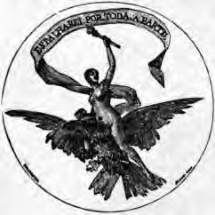

MANOEL D'ARRIAGA
CANTOS
SAGRADOS

LISBOA
MANOEL GOMES, Editor
LIVREIRO DE SUAS MAGESTADES E ALTEZAS
70--RUA GARRETT (CHIADO)--72
1899
Pág. III
DEDICATORIA
Ás almas piedosas e cultas em cuja convivencia
encontrei conforto, fortalesa e fé na bondade e na virtude,
e
Ás proximas gerações futuras, a quem compete a integração do destino
humano segundo o novo Ideal de Justiça
offerece e consagra estes Cantos
O SEU AUCTOR.
Pág. V
AO PUBLICO
A exemplo do lavrador que nas tardes melancolicas do outomno, antes que
chegue o inverno, recolhe os fructos das suas pequenas herdades, nós,
n'este periodo calmoso da existencia em que entrámos, e primeiro que a
morte nos venha trazer, com a paz da sepultura, a melhor compensação dos
nossos longos soffrimentos, deliberámos recolher e seleccionar as poesias
que escrevemos no longo periodo de trinta e dois annos, que decorre desde
1867 até hoje e que, com rarissimas excepções, devidas quasi sempre a
inconfidencias e curiosidades d'amigos, são todas ainda hoje ineditas.
Reunimol-as em quatro volumes, o primeiro dos quaes, o dos Cantos, é o
que damos hoje á publicidade.
O segundo com o nome de Irradiações, é dividido em quatro
livros--Devaneios--Imagens d'um mundo extincto--Nas Alturas--No
Lar.
Pág. VI
O terceiro contém poesias dispersas, ensaios e fragmentos.
O quarto, um poema heroico glorificando os triumphos da Humanidade no
concerto do Universo, e onde, sob uma fórma dramatica, reatámos as
tradições gloriosas de Portugal no periodo de Renascença á futura
solução do problema humano, sob um novo ideal de justiça.
Foi este poema, a que démos o titulo de Synthese Suprema, escripto nos
tres ultimos annos que se seguiram ao nosso affastamento da politica
militante, quando abandonámos de todo o parlamento, onde a nossa voz
ficou por completo isolada e perdida...
Compozémol-o ante a ameaça constante da morte que as nossas doenças,
então aggravadas, nos punham todos os dias diante dos olhos, sem
esperanças de o levarmos ao seu termo; e foi feito a pedaços nas poucas
horas d'ocio que nos restavam dos nossos deveres profissionaes.
A poesia aos nossos olhos nunca foi um mero recreio de espirito.
Como todas as bellas artes, tende a exercer uma funcção social, hoje
tanto mais necessaria quanto é frouxa, ou quasi nulla, a que a Religião,
e a moral d'ella nascida, exerceram outr'ora nas multidões incultas, que
á falta d'um ideal filho dos tempos, que as ajude na solução do seus
tenebrosos e multiplos problemas: ou se tornam indifferentes ou
scepticas e vivem como espiritos revoltados contra todo o existente!...
Pág. VII
A muitos parecerá contradictorio que, tendo nós combatido em toda a
nossa vida, ha mais d'um quarto seculo, o obscurantismo, os absusos e os
crimes commettidos á sombra das religiões positivas, sobre tudo da
religião dogmatica, nos aventuremos, sobre as ruinas do velho mundo e á
entrada dum novo cyclo historico, a soltar cantos d'uma tão ardente fé
religiosa!...
A resposta encontral'a-ha o leitor na nota elucidativa á poesia O que
eu vi, que adiante publicamos, e nas immediatas.
Se errámos ou não, os factos é que o hão-de decidir d'aqui mais a algum
tempo.
Só aqui diremos que para se unirem pelo Amor e pela Justiça as duas
metades da humanidade, de que depende a integração do destino humano, o
homem e a mulher, que as crenças religiosas e as demonstrações
scientificas trazem tão profundamente divorciados na vida do lar e no
foro interno; para levarmos ao povo a communhão do novo credo e
levantarmos-lhe o coração e a alma muito acima das meras questões de
interesses materiaes em que o trazem envolvido: é preciso procurar um
ideal fóra das contingencias humanas, preparar com elle as almas para os
actos fundamentaes d'abnegação e d'altruismo que reclama o problema
social, o que só se pode alcançar á sombra de religiosidade que está no
fundo da nossa natureza, mudando apenas de objectivo e de processo.
Qualquer que seja porém, a opinião em contrario de Pág. VIII nossos
competidores, e que acatamos, é d'esperar que attendam a que, n'uma obra
d'arte, não se deve perder de vista a sinceridade do seu auctor, o fim
que se propõe servir e o meio que emprega para o alcançar.
Sob este triplice ponto de vista, em que sempre nos mantivemos, talvez
possamos contar com a benevolencia dos nossos contrarios.
Ainda uma palavra sobre as razões porque só agora, no fim da nossa
carreira, nos aventuramos a publicar estes trabalhos.
Dentre muitos outros, o motivo predominante encontral-o-ha o leitor no
respeito quasi religioso que sempre tivemos pela publicidade, por este
momento sagrado em que entregamos aos outros as nossas ideias, as nossas
opiniões, os nossos sentimentos!
Accaso terão direito a sel-o?! Irá n'elles alguma cousa que seja menos
verdadeira, menos justa, menos bella?!
E, quando tal se dê, o que pensarão de nós os que vierem a
julgar-nos?!...
Transmittindo a estranhos, sob as fórmas divinas da arte, o que havia de
melhor no nosso mundo interior, e que merecera a sancção da nossa
consciencia, não iremos susceptibilisar ou offender, apesar d'isso, o
que os outros teem de mais sagrado no coração e amam mais de que tudo?!
Não seremos nós uns illudidos que vamos com a nossa illusão concorrer
para os enganos dos outros?!
Pág. IX
Todas estas perguntas accudiam ao nosso espirito quando nos incitavam a
imprimir estes Cantos e esperámos sempre que um mais maduro exame os
auctorisasse a sahir do recatado asylo da nossa consciencia, a ir correr
mundo e a suscitar por ventura a animadversão ou a sympathia dos
leitores!...
Que o publico encontre n'elles a grata companhia que nos fizeram tão
largos annos, é o melhor premio, se algum elles merecem, a que pode
aspirar o auctor d'estas linhas.
Lisboa, 15 de março de 1899.
Manoel d'Arriaga.
Pág. XI
LIVRO PRIMEIRO
DEUS E A ALMA
Pág. 1
I
O QUE EU VI
Sahi um dia a contemplar o mundo,
Por vêr quanto ha de bello e quanto brilha
Na multipla e gloriosa maravilha,
Que anda suspensa em o azul profundo!
Vi montes, vales, arvores e flôres,
Limpidas aguas, múrmuras torrentes,
Do grande mar as musicas plangentes,
Dos céus sem fim os trémulos fulgôres!
Pág. 2
Trouxe os olhos tão ricos de belleza,
O coração tão cheio de harmonia,
De quanto havia em terra, mar e céos,
Que interpretando a sós a Natureza:
Dentro de mim esplendido fulgia,
N'um circulo de luz, teu nome, oh Deus!
Pág. 3
II
MUNDO INTERIOR
Materia ou Força, Lei ou Divindade
Quem quer que seja que dirige o mundo,
Esparze em tudo o espirito fecundo
Do Summo Bem--Belleza, Amôr, Verdade.
Á luz d'esta Santissima Trindade,
Cercado d'esplendor, clamo e jucundo,
Sorri-me em volta o universo; ao fundo,
Por synthese Suprema, a Humanidade!
Pág. 4
Dos homens rujam temporaes medonhos...
Que em mim, no meu labôr, do Bem sedento,
Meus dias correm limpidos, risonhos!
Estrellas que brilhaes no firmamento!
É menos bella a vossa luz que os sonhos
Que gera na minha alma o Pensamento!
Pág. 5
III
TRISTEZA
Como isto cá por fóra é tudo alegre!
Quão bello o sol! que esplendida harmonia
A terra, o mar e os céos!
Porem dentro de mim que mundo á parte!
Que embate de paixões! Que noite funebre!
Que magoas, Santo Deus!
Ai! se as manchas que o sol no rosto esconde
Tem sobre o mundo alguem onde projectem
A triste escuridão,
Minha alma é como o espelho onde ellas caem,
Tão profunda é a mágoa que me lavra
Aqui no coração!
Pág. 6
E eu via ha pouco o azul d'um céo sem macula!
E o sol d'esta alma fulgurante e limpido
Banha-me todo em luz!
Porém, franqueza humana! eu proprio o obrigo
A alumiar-me com a luz da frouxa lampada
D'um templo de Jesus!...
Senhor! Senhor! que um teu olhar me alegre!
Que lave o pavimento de meu peito
De muita ideia vã,
Que o mal é como a noite, e o sol apaga-a
E transforma-a na prata, ouro e purpura
Das nuvens da manhã!
Oh! tu tristeza, irmã dos desgraçados,
Que lanças no meu peito os ais plangentes
D'esses gemidos teus!
Desprende da minha alma as azas negras,
E deixa entrar alegre a luz do dia,
A luz vinda dos céos!
E vós, filhos do sol, tribus innumeras
Da familia de Deus, plantas e flôres
Insectos e animaes,
Que engolfados nos gozos do Universo,
N'esse concerto immenso de harmonias,
Nos céos a Deus louvaes:
Pág. 7
Ah! venho-vos tomar por meus mentores,
Pois vale bem mais a luz do vosso instincto,
Que a luz d'esta razão,
Se eu não sei como vós viver contente,
Trazer o azul dos céos na consciencia,
E a paz no coração!
Lisboa
Na tapada d'Ajuda,
1869
Pág. 8
IV
PRESENTIMENTOS
Eu bem sei que devia
Causar-te muito dó,
Em noite tão sombria
Vêres-me aqui tão só!...
Nem sei que sol m'alegra!
A sós com a minha cruz,
Sou como a nuvem negra
Que encerra muita luz!...
Pág. 9
Como arvore sombria
Vergada sobre um val,
Assim vivo hoje em dia
Á sombra do Ideal...
Que eu tenho muita fome
De Justiça e d'Amor,
E aqui não ha quem tome
A serio a minha dôr...
O mundo vê e passa,
Como sempre passou,
Sorrindo da desgraça
Dos tristes como eu sou...
E este sonho dourado
D'amôr, que a gente vê,
Não póde estar guardado
N'esses homens sem fé!...
Pág. 10
Ah! não! já não m'illudo
Foi isso o que suppuz;
Mas vi mudar-se em tudo
Em sombra a minha luz...
E os sonhos que já tive
Tão bellos, afinal,
São hoje um céo que vive
Sobre este lamaçal!...
Um céo que vejo, ao longe,
Exposto aos olhos meus,
Co'a mágoa com que um monge
Veria outr'ora a Deus!...
E onde ha maior castigo,
Mais dura provação,
Que ter por inimigo
O homem nosso irmão,
Pág. 11
Aquelle a quem nós démos,
Com toda a candidez,
Os sonhos que hoje vêmos
Desfeitos a seus pés?!...
Ah! suppõe-me o desgosto,
De eu vêr desparecer
A cópia do meu rosto
Aos pés d'uma mulher,
E isto em desacato
Do meu mais santo amor:
E ahi tens um retrato
Da minha immensa dôr,
Quando vejo desfeito
Por gente ingrata e má
Um sonho do meu peito,
E muitos vi eu já!...
Pág. 12
Por isso eu n'esta vida,
Apoz tanta illusão,
E tanta flôr perdida,
Tanta corôa no chão...
Ai! sinto com o anceio,
Que é proprio do infeliz,
Um mal n'este meu seio
Lançar muita raiz!...
Espero vêr a morte,
Eu proprio a invoquei,
Levar-me d'esta sorte
Para onde?! É que eu não sei!...
Como eu não sei dizer-te,
E isto que me consol',
Como é que se converte
Em vida a luz do sol!...
Pág. 13
Como nasce a ventura
Do homem que morreu,
Dormir na sepultura
Para acordar no céo!...
Aqui tudo é mysterio!...
Mas visto que assim é,
Onde ha melhor criterio
Que á luz da nossa fé?
E eu creio firmemente
Que o martyr de Jesus,
Não fica só pendente
Dos braços d'uma cruz...
Que o homem que prosegue
A luz d'um Ideal;
Embora a turba o pregue
Na sua cruz fatal...
Pág. 14
O céo é bem profundo,
O fundo nem tu vês,
E ha n'elle muito mundo,
Para onde irá talvez!...
A vida continúa,
E a alma, emquanto a mim,
Avança e não recúa
Por esses sóes sem fim!
Do sol se um raio ardente
No mar vier cahir,
Em nuvem transparente
Nós vêmol-o subir!
Não ha suster-lhe o rumo
Que o leva para os céos,
E assim é que eu presumo
Voarmos nós a Deus!...
Pág. 15
O ponto é merecel-o,
Que Deus é justo e pae,
E eu sei com que desvelo
A si os bons attrae!
Mas quando eu vejo a lua,
Não sei que ideia má
N'esta alma me insinua
A luz que n'ella ha!...
Emquanto em torno d'ella,
Ao norte, ao leste, ao sul,
Refulge tanta estrella
Pela amplidão do azul,
Tu vêl-a solitaria,
Em paz cruzando o céo,
Como urna funeraria
D'um mundo que morreu!.
Pág. 16
Ali já não ha vida!...
Ali não ha calor!...
N'aquella luz, vertida
Em lagrimas de dôr,
Ha só tristeza e lucto,
E confrange-se e doe
O coração, se escuto
Mulher, porque isso foi!...
Ah, tenho medo
Que o Supremo Juiz
Nos julgue assim tão cedo!...
Não sei que voz m'o diz...
Não sei... mas, se contemplo
Os crimes que ahi vão,
Mulher, aquelle exemplo
Conturba o coração!...
Pág. 17
E assim só n'outra parte
Verão os olhos meus
Os sonhos que reparte
Commigo a mão de Deus!...
O mundo onde abre o cardo
E o lyrio ao mesmo sol;
Onde ama o leopardo
A par do rouxinol;
Que tem de andar na sombra
Para viver na luz;
E, o que inda mais m'assombra,
Onde ha Nero e Jesus:
Por mais bello e risonho
Que seja, ainda assim
Não vale qualquer sonho,
Que trago dentro em mim!...
Pág. 18
Isto é um fraco esboço
D'uma outra vida e crê,
Que sinto-a, mas não posso
Dizer-te onde ella é!...
Se a Vida em nós começa,
Por esses sóes d'além,
Sobre a nossa cabeça.
Trabalha-se tambem!...
Mulher! mulher! quem sabe
Se é isto o que m'attrae
Aos céos, pois, tanto cabe
A Deus, que é justo e pae...
Lisboa, 1870.
Pág. 19
V
CONSCIENCIA
Para um homem que aspira
Ao ideal da Belleza,
Não ha maior tristeza,
Magua maior não ha,
Que vêr escurecer-se-lhe
O ceu da noite escura
D'alguma ideia impura,
D'alguma paixão má!
Pág. 20
Paixão que muitas vezes
A luz da nossa Ideia
Accende, inflama, atêa,
E depois nos attrae
Com tanto magnetismo,
Com tal encantamento,
Que o homem n'um momento
Vacilla, cega e cae!...
Cae, sim, do seio esplendido
Do mundo onde vivia
Na mais doce harmonia
Em paz co'os dias seus,
Para apagada a febre
Do seu fugaz delirio,
Achar-se co'o martyrio
De te perder oh! Deus!
Sem Ti, meu pae, que assombro!
Que noite tão completa!
Que acerba dôr me inquieta
Meu fragil coração!...
Voltar a vêr a alma
D'esperanças povoada,
E achal'a transformada
Em lugubre soidão!
Pág. 21
Senhor! se desabassem
Á tua vóz as bellas
E limpidas estrellas
Dos ceus que não teem fim,
Eu creio que assombrado
Do horrendo cataclysmo,
O Sol, d'além do abysmo,
Seria egual a mim!
Eu lembraria a aguia,
Que a prole ainda implume
Deixando sobre o cume
De monte erguido ao ceu,
A fosse achar de subito
Na rocha alcantilada,
No ninho, fulminada
D'um raio que desceu!
Egual seria o quadro
Da minha consciencia,
Ao ver a tua ausencia
Fazer-se em mim, Senhor!
Que em volta do teu astro
Minha alma de poeta
É pallido planeta
Buscando o teu amor!
Pág. 22
E eu sem ti nem vivo!...
Tu és, oh, doce esperança,
O seio onde descança
Meu ser e afinal
Não sei até dizer-te
O quanto soffreria,
Se vira extincto um dia
Em mim, teu Ideal!
Oh não mil vezes antes
Em carcere ermo e escuro,
Achar-me de futuro
A sós c'a minha dôr;
Extincta a luz dos olhos,
E as bellezas do mundo,
E o ceu azul profundo
Com todo o seu fulgor!
Tu crê que nem demandam
Os mundos inferiores
Fócos de luz maiores,
Por esse infindo azul,
Como eu o eterno centro
Das leis da natureza,
Do Amor, e da Belleza,
Que são meu norte e sul!
Pág. 23
Oh Pae! se n'algum dia,
Eu vir, n'uma miragem,
Alguma falsa imagem
Do Bem prender-me aqui:
Desvenda a tua face,
E mostra-me o teu seio,
Que, mesmo embora em meio
Do abysmo, irei a ti!
Irei, tão instinctivo,
Tão amoroso e firme,
Eu sinto a attrair-me
A ti o teu poder,
Que eu vejo em ti o Norte,
Para onde se encaminha
A pura essencia minha,
Que sente, pensa e quer!
Irei vencendo, indomito,
Innumeros attrictos,
E escolhos infinitos,
E infindos escarceus,
Como essa vaga enorme
Do mar que não recua,
Seguindo sempre a lua
Que vê passar nos ceus!
Pág. 24
Irei bem como a Terra
Seguindo eternamente
O rumo do oriente
A demandar a luz;
Bem como Jesus Christo
O rumo solitario
Da senda do calvario
Á busca d'uma cruz!
Irei cá d'este mundo
Onde tu me cedeste
A dadiva celeste
Da Rasão e do Amor:
Raios vitaes que mudam
Em luz a nossa essencia,
E a luz em Consciencia,
E esta em ti, Senhor!
Lisboa, 1869.
Pág. 25
VI
REVELLAÇÃO
O LAGO
Scismava um dia na cruel sentença
Com que a Egreja fulmina a raça humana,
Deixando impura a fonte d'onde emana
O sangue que me anima, e a alma que pensa:
E ao passarem no ceu do meu destino
As nuvens da tristeza e da saudade,
Revellou-me o Senhor alta verdade,
Junto ás margens d'um lago crystalino!
Pág. 26
Isto foi pelo mez do abrir das flôres,
Quando a vida celebra os seus noivados,
E o mundo, sob os verdes cortinados,
Parece um doce thalamo d'amores!
Estava um dia esplendido! a animal-o
Eu via o seio azul do ceu mais lindo
Curvar-se sobre mim, ethereo, infindo
E tepido: era um gosto enamoral-o!
Como fecho da abobada infinita,
O Sol nos ceus, riquissimo objecto,
Com barras d'ouro irradiava o tecto
Do vasto pavilhão que o mundo habita!
Côres variadas, fórmas differentes,
N'um conjuncto de graças sem egual,
Debuxavam-se ali ao natural
Sobre o crystal das ondas transparentes!
Pág. 27
Alvas manchas d'insectos pequeninos,
Envolvendo-se em giros caprichosos,
Como tríbus de povos venturosos,
Fruiam junto ao lago os seus destinos!
Pelas balsas cantava a toutinegra,
E as rolas modulavam doces côros,
No ar passavam fremitos sonoros
Co'as vibrações da Luz que o mundo alegra!
No lago, a planta, a flôr, o ceu, a terra,
Como notas d'uma unica harmonia,
Revellaram-me á plena luz do dia,
Enlevos que o prazer da vida encerra!...
E eu via tudo, e extatico scismava:
Se por ventura a colera divina,
Segundo a Egreja ao mundo inteiro o ensina,
Do gremio dos felizes me affastava!...
Pág. 28
E não podendo crer, embora obscuro
Vêr-me qual sou, que esta alma de poeta,
De tanto sonho explendido replecta,
Atollada estivesse em lôdo impuro...
Ai! quando a Deus pergunto se prendeu
N'um pó que é vil o espirito divino,
Olho o espelho do lago crystalino
E não encontro o lago: encontro o ceu!
O mesmo que era em cima azul, immenso,
E a lampada brilhante que o alumia,
Lá no fundo do abysmo aos pés os via,
De sorte que em dois ceus era suspenso!
E quanto se ostentava em torno ao lago,
Os muros de verdura, a flôr mimosa,
O deslisar da nuvem vaporosa,
E a voltear do insecto incerto e vago:
Pág. 29
Outro tanto animava, ao longe, e ao perto,
Aquella região d'azul vestida,
Onde a minha alma, em extasi embebida,
Contemplava na Terra um ceu aberto!
E emquanto extasiado a sós fitava,
Nas bellezas do lago transparente,
Aqui uma flôr, além, para o poente,
A nuvemsinha branca que passava,...
Eis senão quando, uma ave, porque visse
Insectos junto da agua socegada,
Desceu subtil, aerea e delicada,
E ao perpassar roçou-lhe a superficie,...
O ponto ferido, em ondas borbulhando,
Desabrochou em curvas graciosas,
Como as folhas concentricas das rosas,
Ou lusidias cobras imitando!
Pág. 30
E emquanto o impulso em torno se propaga
Em circulos risonhos: n'um momento,
Toda a cupula azul do firmamento
Oscilla, treme e cae, e o Sol se apaga,
E a arvore, e a flôr, e quanto junto á margem,
Em doce paz, seu rosto reflectia
No crystalino espelho, por magia
Da lei do amor, a doce lei da imagem!...
Fere-me então bem intima tristeza,
Ao vêr aos pés, em sordido tumulto,
Um lymbo verde e escuro onde occulto
Estava um ceu tão rico de belleza!...
Lembrei-me então da minha vida insana,
De quanto sonho lindo anda desfeito
Nos intimos arcanos do meu peito,
Co'o tropel das paixões da vida humana!...
Pág. 31
E as lagrimas cahiram-me uma a uma
Sobre esses bens que a Terra e os ceus inspiram,
E ao contacto das coisas se extinguiram
Como aereos balões feitos d'espuma!
N'isto o Senhor, que tudo vê e ampara,
Converte-me de novo o charco immundo
N'um ceu azul infindo, e n'elle um mundo
Formoso como os bens que imaginara!...
Scismei então por longo espaço e digo,
Que aos olhos meus por Deus fôra patente:
Que a alma humana póde, ingenua e crente,
Vivendo em paz, um ceu trazer comsigo!
Ah muito embora a dôr seu peito opprima,
O espirito, que abrange o mundo inteiro,
Póde vêr, quanto justo e verdadeiro,
Nos seios d'alma os ceus que estão por cima!
Pág. 32
Maxima grande, maxima tamanha,
Tão repassada d'intima poesia,
Porventura d'egual sabedoria
Á predica de Christo na montanha,
Ah! sê, por entre as sombras da desdita,
A ponte aerea, o arco d'alliança,
Que, em vez da excommunhão que a Egreja lança,
A Deus eleva a Humanidade afflicta!
Coimbra
Quinta de Santa Cruz
1871.
Pág. 33
VII
MISSA PONTIFICAL
UM EVANGELHO
Sahi uma manhã mal vinha o sol rompendo,
E fui-me religioso a ouvir a missa ao campo,
Á vasta cathedral do mundo, aonde aprendo
Da Vida as sacras leis, que em letras d'ouro estampo.
Sentei-me sob um bosque estenso e solitario,
Que, em paz e sombra involto, á quietação me envida;
O accaso conduzira-me a um vasto santuario,
Onde ia celebrar-se a communhão da Vida!
Pág. 34
Debaixo do docel da mûrmura floresta,
Se um culto universal é justo a Deus se vote:
Estava o templo augusto armado todo em festa,
Faltando unicamente agora o sacerdote!
O mundo em derredor aguardo-o co'anciedade...
E eil'o que chega, emfim, das bandas do oriente,
Surgindo como um Deus no azul da immensidade,
N'um carro triumphal, de raios resplendente!
Ao vel'o perpassou nas arvores sagradas
Um sopro mysterioso, o espirito do vento,
Que deixa-nos ouvir, em musicas toadas,
Psalmos que vão morrer no azul do firmamento!...
Nos multiplos florões das trémulas janellas,
Nos ramos mais subtis que a luz dos ceus colora,
Com magico fulgor scintillam, como estrellas,
Os limpidos crystaes das lagrimas d'aurora!
Nas naves, que sustêm a abbobada elevada,
Penetra triumphante a luz, suprema artifice!
Interprete de Deus, celebra a sua entrada
Com pompas, do Universo o maximo pontifice!
Assim que o sol sahio das brumas do horisonte,
Um deluvio de luz encheu o vale e o monte!Pág. 35
A pedra, o musgo, o insecto, a flôr, os arvoredos,
Trocaram entre si mil intimos segredos!...
Os passaros gentis, aladas creaturas,
Soltaram festivaes Hossana nas alturas!...
O sol triumphador, do mundo a vida accorda,
E esplendido festeja o eterno sursum corda!...
Estava em plena festa a Terra, mãe querida!...
E eu, em face d'ella, a contemplar-lhe a Vida!...
Então a Luz, qual flôr, subtil e sorridente,
Me disse a mim que sou seu terno confidente:
Poeta! vês o mundo alegre e harmonioso;...
Em intimo convivio unido o sol á terra,
E a terra e o sol aos céus!... No enlace auspicioso,
Permutam entre si os bens que a Vida encerra!...
A vida é sim um Bem; por isso é dada a todos!...
A todos por egual, a infindas creaturas,...
Que, em multiplo labor, e por differentes modos,
Procuram-no attingir na terra, e nas alturas!...
Áquelle que transpõe as portas da existencia
Um vinculo d'amor protege-o logo, e fica
Ao mundo inteiro preso, em mutua dependencia,
Ah desde a larva obscura ao sol que a vivifica!..
Pág. 36
Qualquer que seja o nome, ou chama-lhe Verdade,
Belleza, Amor, Justiça: é tudo a mesma cousa!...
É quem fecunda e rege os soes na immensidade;
Quem dá ao universo a paz em que repousa!...
Por isto o mundo inteiro é todo uma harmonia!...
E sente a reanimal'o uma alma alegre e sã!
E vens de longe aqui, sedento de poesia,
A namorar-me a mim, que sou a tua irmã!
Do Sol baixei aqui a ler-te os evangelhos
Eternos de Verdade, e a missa vae findar!
Meu crente e meu poeta! é a hora: de joelhos,
Em nome do Senhor, te quero abençoar!
Á sua voz curvando a fronte: em fé immerso,
Senti entrar-me n'alma a alma do universo!...
Irmã, gemea de minha, a luminosa flôr,
Encerra-se afinal n'esta palavra==Amor==!
Quinta da Beselga
1885.
Pág. 37
VIII
AVÉ CREATOR!
Desprende pelo espaço as azas d'ouro,
Águia de Deus, no mundo extraviada!...
Pela patria celeste, a tua amada,
Vae em busca de Deus,
Cantando um hymno em honra do seu nome,
Que meu querer e instincto insaciavel
Te guiarão, qual bussola admiravel,
Pelos infindos ceus!
Pág. 38
Senhor! venho invocar teu nome augusto,
Em face d'estes vastos horisontes!...
Que em torno a mim o rio, a arvore, os montes,
Fallando-me de Ti,
Lançam-me n'alma um teu olhar divino,
E, com elle, um occeano de luz pura,
Que me trasborda em ondas de ventura
O que eu t'offereço aqui!
Não sob o tecto do sombrio templo,
Que a fé christã do povo erguera outr'ora
Como um tumulo, onde o homem commemora
A tua morte, oh Pae!...
Mas sob o tecto azul do Templo Eterno,
Perante o sol que passa dando a vida
Em teu nome, que esta oração sentida
Buscar teu throno vae!
Pois é--me triste a mim que as cousas brutas,
Ellas, sem alma, em gratidão me vençam:
E a Terra, emquanto o Sol lhe envia a bençam
Da sua eterna luz,
Converte-a em flôres, canticos e fructos,
E, n'um concerto alegre e harmonioso,
Tributa ao Sol um culto tão piedoso,
Que o peito meu seduz!
Pág. 39
Tu vel'a, quando o Sol lhe affasta os raios
Do seu formoso olhar durante o inverno,
A amante debulhar-se em pranto eterno,
Das gallas se despir;
Em valle e monte as folhas, com tristeza,
Dos troncos com os ventos desprendendo-se,
E o mar, co'os ceus em lucta contorcendo-se,
Raivoso aos ceus bramir!...
Mas quando o Sol de novo a aquece e anima:
Oh que effluvios d'amôr então contemplo!...
Traz o amante a alleluia ao escuro templo,
E as trevas dão fulgôr;
Espalma a folha o ramo resequido,
E, ao som do mar que canta de mansinho,
Da terra brota a flôr, da haste o ninho,
Do ninho surge o amor!
Seja assim o meu peito! Que a minha alma,
Buscando o foco eterno e resplendente
Do Sol dos soes, o Ser Omnipotente:
Me eleve o coração
A trasbordar torrentes de harmonias,
Que entoem pela voz das creaturas:
Santo! Santo! tres vezes nas alturas,
Ao Deus da creacão!
Pág. 40
Pois eu que sou o espirito das cousas,
O verbo inspirador, a alma, a vida;
Sinto em meu peito a gratidão devida
Á tua mão que attrae
Em giro eterno os mundos do Universo;
E eu vendo orar ao Sol a flôr n'o matto,
Não hei de só ficar injusto e ingrato
Para comtigo, oh Pae!
Seja pois o meu canto a voz do interprete,
Que moldando nas formas da palavra
A vida universal que em tudo lavra
Co'o sopro animador:
Eu possa vêr a Terra envolta em canticos,
Sobre as azas de luz da alma humana,
Remontar-se ás origens d'onde emana,
As tuas mãos, Senhor!
Quinta da Beselga
1871.
Pág. 41
IX
SURSUM CORDA!
Oh Sol, alma do mundo! esplendido portento
D'um mar feito da luz! vulcão, cuja fornalha,
Por entre um fogo eterno, expande o movimento
Da machina febril do mundo que trabalha!
E tu, Astro do amor, que, em noite silenciosa,
Qual perola engastada em fulgidos brilhantes,
Derramas tua luz serena e voluptuosa
Nos seios virginaes das timidas amantes:
C'o os vossos esplendores,
Pela amplidão dos ceus,
Cantae altos louvores
Ao espirito de Deus!
Pág. 42
E tu, mar rugidor! austero cenobita,
Que em vastas solidões gemendo os teus pesares,
Levantas o teu canto á abbobada infinita,
Juntando a vóz piedosa aos céllicos cantares!
E vós, filhas do ermo, alegres, crystalinas
Fontes que derivaes das fendas dos rochedos,
Ás flôres murmurando, em musicas divinas,
De amor e de ventura uns intimos segredos:
Mudae as harmonias
Da vossa eterna vóz
Em ternas homilias
Ao pae de todos nós!
Arvores que fluctuaes nos cimos das montanhas,
Altivas demandando o azul do firmamento;
Que encheis as solidões de musicas estranhas,
Se passa sobre vós o espirito do vento!
Lyrios, que abrindo o seio ao osculo amoroso
Da luz que envia o sol da abbobada azulada,
Mandaes-lhe o vosso olor no ether luminoso,
Como o habito subtil d'uma alma enamorada:
A musica e o perfume
Que desprendeis, votae
A quem em si resume
O mundo inteiro e é Pae!
Pág. 43
Oh rabidos leões! lá quando em vossas festas,
Altivos como os reis, indomitos senhores,
Debaixo do docel das mûrmuras florestas,
Rugis como um trovão os fervidos amores!
E vós, corças gentis e timidos cordeiros,
Que em vossos corações e almas bem formadas,
Ao sangue preferis a lympha dos ribeiros,
E á carne em podridão as hervas perfumadas:
Louvae a quem fizera,
Co'o mesmo engenho e amor,
As fauces d'uma fera,
E o calice d'uma flôr!
Arvores, flôres, mar, e estrellas, e animaes,
E todos vós que entraes no giro da existência;
Que haveis nas regiões das cousas immortaes,
Por synthese suprema, a luz da consciencia:
Unindo-vos a mim, como eu á Humanidade,
Louvemos todos nós n'uma oração sentida,
Em côro festival que attinja a immensidade,
O eterno Sol dos Soes, o sabio Author da Vida!
Cantemos, creaturas!
Pela amplidão dos ceus,
Hossana nas alturas
Ao espirito de Deus!
Carvalhaes, 1886.
Pág. 44
X
AOS CATHOLICOS
Todos vós que sois sinceros crentes,
Que oraes a Deus no intimo do peito,
Oh mysticos christãos;
Embora tenha crenças differentes
D'aquellas que seguis, eu vos respeito,
E julgo como irmãos!
Eu amo a Deus; depois a Humanidade;
Depois os bons, e d'estes o primeiro,
É Christo, o Redemptor!
Não sendo egual em tudo á Divindade,
É, como justo e homem verdadeiro,
Meu mestre e meu mentor!
Pág. 45
Embora por fanatico me tomem
Impios e atheus, se os ha, eu lhes confesso,
Que o Martyr da Paixão
Parece-me tão grande como homem,
Que até sinto vertigens quando messo
Seu terno coração!...
Oh meu Jesus! nas luctas pela vida,
Por onde tanto naufrago fallece
No meio da viagem:
Minha alma soffredora e dolorida,
Cahiria tambem se não tivesse
A tua doce imagem!...
Eu que creio que o facho da sciencia
Nos ha de revellar, ao fim de tudo,
Que em nós se concilia
Rasão e Fé, Justiça e Consciencia:
Ah quero-te Jesus! por meu escudo,
Por meu amparo e guia!
Na Sé de Lisboa
na quarta feira de trevas
1888.
Pág. 46
XI
FÉ E RASÃO
A CRUZ E O PÁRA RAIOS
Da velha cathedral, esbella e rendilhada,
Votada a ser mansão do Deus, author do mundo,
Na flecha a mais gentil, campeia abençoada
A cruz do Redemptor, da Gallilêa o oriundo!
Nos impetos da fé, cortantes como a espada,
O ungido do Senhor, d'olhar cavo e iracundo,
Aponta á multidão, humilde e ajoelhada,
Por seu supremo amparo a cruz, no azul profundo!
Pág. 47
Em nome d'ella exalça a fé porque a aviventa,
E diz mal da rasão que tenta, em vãos ensaios,
Dos ceus arrebatar a luz, de que é sedenta!
Mas do alto onde ella está, que causa até desmaios,
Temendo que a derrube o fogo da tormenta:
Em nome da Rasão lhe pôe um pára raios!...
Outubro de 1888.
Pág. 48
XII
AMOR E PROVIDENCIA
Em quanto eu, alta noite, velo e lido,
Por vós mantendo innumeros cuidados,
Dormis, caros filhinhos, socegados
Em torno a mim o sonho appetecido!
Dormis?! sonhaes de certo... e eu pae envido
Meus esforços por vêr realisados
Vossos sonhos gentis e perfumados:
Ampara-vos um peito estremecido.
Pág. 49
Outro Alguem faz por nós o que eu vos faço:
Com suprema bondade e sapiencia,
Rege os mundos que rolam pelo espaço!
Esse Alguem é o Amor por excellencia,
O formidavel e invisivel braço,
E o olhar que nunca dorme==a Providencia==!
Lisboa, 1885.
Pág. 50
XIII
Á GUERRA!
O QUE EU SINTO...
Se vejo com pavor as luctas carniceiras
Que empenham as nações, chamadas as primeiras,
Nos campos da batalha,
Ah! quando a sós comigo e o Eterno me concentro,
Ouço não sei que voz a mim bradar cá dentro:
==É Deus que ali trabalha==!
Por mais que ousado vôo aos ceus a aguia eleve,
Nos ceus ha um limite além do qual em breve
Fallece a aza e taes
Como as aguias os reis!... Subiram, mas solemne.
O dia ha de chegar em que Deus os condemne
E brade-lhes==Não mais==!
Pág. 51
No chão não ha raiz que diga á Terra==estanca
A seiva que me dás==! Nem aguia ou pomba branca
Que engeite o vôo alado!...
Não ha um lavrador que entaipe em cal e pedra
A fonte de chrystal, de cujas aguas medra
A arvore, a flor, o prado!...
E onde ha no mundo um povo a outro povo extranho?!...
Ou odio figadal, intrinseco, tamanho
Que a todos nos divida?!
Se a Terra, o mar profundo e o proprio sol são pouco
Por darem vida a um lyrio: haverá hoje um louco
D'um Cezar que decida,
D'encontro ás sabias leis por Deus dadas ao mundo,
Que um homem, cujo peito infinito e profundo
Abrange a Terra e os Ceus,
Guerreie o proprio irmão que é d'elle a propria essencia,
A luz, o ar, a vida, a força, a providencia,
Que deste-lhe, meu Deus?!
Oh não!... Tu mandarás o dia em que a Justiça
Obrigue-os a expiar com fronte submissa
Dos crimes o estendal
Que encheu de sangue e horror as paginas da Historia,
Servindo de lição, ficando por memoria,
Em prol do teu Ideal!...
Pág. 52
E o mundo hade voltar á fonte d'onde veio,
E ser todo elle amor, justiça e paz!... Já leio
Signaes de nova Luz!...
As crenças do Passado estando já em terra,
Vem prestes a surgir a nova Lei que encerra
Os sonhos de Jesus!...
E eu beijo e adoro a mão que impelle e rege o mundo,
Que deu a flor ao campo; os sóes ao firmamento,
E o espirito divino
Aos nossos corações! Que a toda a creatura,
Á flor que desabrocha, ao astro que fulgura,
A todos deu destino!
Por isso eu n'este mar, sobre este chão d'abrolhos,
Por onde cae amaro o pranto dos meus olhos,
De fito no Senhor,
De fito no Ideal, minha alma não se inquieta:
Confia e sobe a Deus, é como a borboleta
Que vae poisar na flor!
Bussaco, 1870.
Pág. 53
XIV
Á PAZ DOS POVOS
HOMO, EX HOMINIS LUPO, HOMINIS COOPERATOR
De lobo te foi dado outrora o nome,
Lobo que a propria especie devastava
Cruento e fero, qual não viras nunca
Leões, pantheras, tigres ou chacaes!...
E a fera, quando a fome
A incita, é quando crava
O dente e a garra adunca
Nos miseros mortaes.
Pág. 54
Da massa do teu cerebro colhendo
A luz consciente e pura das ideas,
Concebes mil engenhos homicidas,
Inventos d'infernal destruição!
Com elles, monstro horrendo!
Ha seculos semeias,
Em guerras fratercidas,
A morte e a assolação!...
Mas como as forças cosmicas da Terra
Cessaram suas luctas de gigantes,
Trazendo á luz do Sol, d'amôr sedenta,
Dois mundos revestidos d'esplendores,
O mineral que encerra
Os fulgidos brilhantes;
E o vegetal que ostenta
O olhar gentil das flores:
Assim as mil paixões que a tanto custo
Contem teu peito e o rubro sangue agita,
Por ultimo hão de ter a vida calma
Que impõe por norma a tudo a Providencia;
E o Bello, o Bom e o Justo,
Na sua acção bemdicta,
Levar-te aos seios d'alma
A paz da consciencia!
Pág. 55
Do sol os raios que dão vida ao globo;
Da vida a força multipla que actua
Em prol de cada qual, para que tomem
Quinhão no Bem, que é dado como a luz:
Reclamam nos que o Lobo,
Da historia se destrua,
E dê lugar ao homem
Sonhado por Jesus!
Se o cahos do teu peito foi sequencia
Do cahos primitivo da natura:
Terá tambem destino egual ao d'este;
Dará um quarto mundo, o da Verdade!...
O da alma, cuja essencia
Incorruptivel, pura,
Procria a luz celeste
Do Bem, na Humanidade!
Ver-te-has então qual Semideus Consciente!
O sangue que pecorre em tuas veias,
Origem dando a fulgidas doutrinas,
Ás nitidas noções das coisas bellas:
Tua alma um resplendente
Santuario, onde as ideias
Serão luzes divinas,
Mais puras que as estrellas!
Pág. 56
Antithese da Vida do Passado,
Compete-te integrar na Terra os Povos;
E, chave do vastissimo problema
Da Vida humana: honrando o Redemptor,
Nos ceus tem Deus traçado
Aos teus destinos novos,
Por synthese suprema,
A Paz, o Bem, o Amor!
25 d'abril de 1898.
Pág. 57
XV
AO HOMEM
Segundo as tradicções que vão sumir-se
Na noite secular das priscas eras:
Rugiram contra ti, Homem, as feras,
E as coleras do mar;
Dos ceus revoltos os trovões e os raios;
Qual reprobo vivias no universo
Inerme, nu e só, na sombra immerso,
Sem Deus, sem luz, sem lar!...
Pág. 58
Apoz infindos seculos de lucta
Co'as forças implacaveis da materia,
Soffrendo, em toda a escala da miseria,
O frio, a fome, a dôr:
Venceste, e oppões ás lugubres cavernas,
Á escura habitação dos trogloditas,
Os fulgidos palacios onde habitas,
Conscio do teu valor!...
Imperios contra ti ergueram despotas,
Quaes moles collossaes architectadas,
Assentes no prestigio das espadas,
Nas mãos d'um Pharaó,
D'um habil Julio Cesar; mas as moles,
Minadas pela acção do povo obscuro,
Cahiram como cae um fragil muro
No chão desfeito em pó!...
No intuito de livrar teu grande espirito
Dos vinculos do mal e enobrecel-o,
Tomas-te a Jesus Christo por modelo
Das tuas concepções;
D'accordo a espada e a cruz, a lei e o dogma,
De ti fizeram novamente escravo,
Mas tu, inda outra vez, altivo e bravo,
Partiste os teus grilhões!...
Pág. 59
Por ultimo lançando mão das forças
Da Terra tua mãe, das leis da Historia:
Apenas em tres seculos de gloria,
Com mil prodigios teus,
Mudas-te totalmente a face ao mundo,
E propões-te a fazer o mesmo á alma,
Porque esta, resplendente, justa e calma,
Triumphe á luz dos céus!
Forjou a mão de Deus no sol teus raios!...
D'ahi todo o esplendor, todo o prestigio
Do teu almo poder! o grão prodigio
Das tuas concepções,
Que em marmore e crystal, em prata e ouro,
E em tellas formossissimas, transmittes
De mão em mão, sem conta, e sem limites,
Ás novas gerações!...
Na terra, erma de Luz, Homem surgiste,
Trazendo no teu rubro sangue a Ideia,
A luz que doma o fogo, o apaga, o atêa,
E o faz descer do céu
Humilde como um cão!... Poder terrivel,
Que Jupiter temeu, quando, iracundo,
Mandou prender, por dar exemplo ao mundo,
Na rocha a Prometteu!...
Pág. 60
D'ahi a mola occulta, a força ingenita,
A causa porque tu, no ardor da guerra,
Revolves sem cessar o céu, a terra,
A alma e o coração,
E fazes e desfazes, sem descanço,
Systemas, religiões, philosophias;
Depões a Deuses, reis e tiranias,
Em nome da Rasão!...
Por veres quem tu és e quanto vales:
Das proprias obras faze o claro espelho,
E escreve em face dellas o evangelho
Da nova religião,
O authentico, o real, o verdadeiro;
Que em vez do degradado filho d'Eva,
Com ligitimo orgulho a Deus eleva
Tua alma e coração!
Senhor das energias infinitas
Do mundo, com que Deus teu pae reforça
Teu multiplo poder: expulsa a força
Que os despotas produz;
Levanta novamente altar e templos
Ao Bello, ao Justo, ao Bem, á Sapiencia,
Afim de que na Terra a Consciencia
Impere em plena luz!
Pág. 61
Em vez de Força, Amôr rege hoje o mundo!...
E Amôr, se toma as normas da Justiça,
Fará com que, empenhando-te na liça
D'um ideal melhor:
Floresçam sobre a Terra, em prol de todos,
Honrando a Deus, servindo a Humanidade,
Os sonhos de pureza e de bondade
De Christo, o Redemptor!...
Terás no espaço os soes por companheiros,
Comtigo permuttando noite e dia,
Na sua eterna e placida harmonia,
Os mil problemas seus!...
D'accordo Deus e a alma, o ceu e a terra:
Verás com resplendor a tua Ideia,
Chamando-a á vida, em tudo onde campeã
O espirito de Deus!
1892.
Pág. 62
XVI
Á MULHER
Senhor da Força, nós, o heroe lendario,
Da Terra o domador, o sabio, o forte,
Dir-se-ia que jurámos ante a morte
Guerra d'irmão a irmão!...
Mais féros do que os tigres, destruimo-nos
A ferro, a fogo, a polvora, a metralha,
Deixando, pelos campos de batalha,
O sangue, a assolação!...
Pág. 63
Mudou agora o Eterno ao mundo a rota
Que ha seculos trazia,... e novos astros
Despontam no horisonte, e em nossos mastros
Mais rutilos tropheus!...
Em vez da guerra truculenta e impia,
Impõe-nos por principio a Paz dos Povos,
Que impavidos demandam mundos novos,
Nova luz, novo Deus!...
Fechado para sempre o ferreo cyclo
Da guerra universal, obscuro berço
Do velho mundo barbaro, inda immerso
Nas lendas dos heroes:
Compete a Ti, Mulher, filha dilecta
De Deus, c'roar na Terra a grande obra,
Que em fulgido progresso se desdobra,
Á clara luz dos soes!...
Missão mais nobre á vida humana é dado:
Juntar e repartir de muitos modos,
Por cada um de nós, e em prol de todos,
Do Bem a eterna luz,
Fazendo com que caiam na nossa alma,
Qual chuva em messe loira e movediça,
N'uma missão d'amor e de Justiça,
Os sonhos de Jesus!...
Pág. 64
Em vez da Força, Amor rege hoje o mundo!
E amor, tomando as gallas da Belleza,
As normas de Justiça, a mãe, a deusa
Das novas gerações:
Ao teu celeste influxo, posto á sombra
Da mãe de todos nós, a Humanidade,
A paz será na Terra, e na Verdade
Os nossos corações!...
Belleza e Amor, unindo-se, fizeram
Do teu mimoso ser um relicario,
Onde a mão do divino estatuario
Os sonhos seus guardou!...
D'encantos mil, conjuncto incomparavel!
A Deus já mereceste tal conceito,
Que só do amor divino do teu peito,
A vida confiou!...
Teu lindo rosto, espelho da sua alma,
Transporta-me a ideaes de tal apreço,
Que em frente d'elle extatico estremeço,
E ponho-me a scismar:
Se entre as ondas de graça e de belleza,
Que lançam sobre mim seus olhos ternos,
Está ou não occulto a bemdizer-nos
De Deus o proprio olhar!...
Pág. 65
Tem jus as niveas formas do teu corpo
Ao flácido velludo, á fina seda,
Primor da industria humana que arremeda
As petalas da flôr!
Rainha! traja mantos d'ouro e purpura,
A doce perl'a, o fulgido brilhante,
E tudo quanto esplendido levante
Na Terra o teu amor!
Amor se symbolisa n'um menino,
Dos ceus gentil e alado mensageiro,
Trazendo atraz de si, como um cordeiro,
Pacifico leão!
O magico poder que a fera doma,
A força de que se arma esse innocente
És tu mulher, e a fera obediente
O nosso coração!
Conscia de Ti, das leis da vida, impera!
E aos pés verás as almas subjugadas!
Tem mais poder que o fio das espadas,
Um riso e olhar dos teus!
Que o teu propicio amor, dos ceus oriundo,
Nos doure a vida, a ampare, a dulcifique,
Nos faça com que a alma humana fique
Mais proxima de Deus!
1892.
Pág. 66
XVII
AOS FILHOS
Trazidos pelo Amor, que por instantes,
O veu ergue á Verdade,
Por nós á luz vieram, quaes prestantes
Peões da Humanidade!...
Amor é quem dos ceus nos abre a porta,
Nos deixa vêr o intuito
De Deus na Terra, e a elle nos transporta
Da amante o olhar fortuito!
Pág. 67
Em nós n'um sonho lindo tendo origem,
Se o sonho a Deus encerra,
As sabias leis da historia humana exigem,
Que o sonho desça á Terra!...
Dos paes vingasse o amor, que este o faria
Entrar na realidade,
Expondo a divinal sabedoria
Em plena claridade!...
Com legitimo orgulho o sol dar-lhe-ia
Seus raios sempre novos;
E a Terra os bens innumeros que cria
Em paz, a bem dos Povos!
Em vez de irmãos maleficos eivados
De odios que o sangue atiça,
Os bons e os maus ver-se-iam congraçados
Em nome de Justiça!
Pág. 68
Em frente das pacificas moradas,
Jasmins, lyrios e rosas!...
E as ruas que pisamos marchetadas
De pedras preciosas!
Tal o sonho que passa pela mente
D'um pae creando os filhos,
E n'essa fé remove deligente
Milhares d'empecilhos!...
Mas fal'o em vão, que o mundo, sob um pacto
Cruel co'o odio eterno,
Lhe põe em derredor, injusto e ingrato,
Em vez do ceu, o inferno!...
Ás vezes chega a ter-se horror ao homem,
Ás suas impias luctas,
Ao termos de entregar o peito joven
D'um filho ás feras brutas!...
Pág. 69
Antithese do Bem em que inda espera,
Pergunta dolorido
Um pae a Deus: se accaso lhe valera
Seu filho ter nascido!...
Emfim é lei, e a lei, ideal supremo
Bemdicto e sublimado,
Fará com que passemos d'este extremo
Do mal, ao Bem sonhado!...
De Deus a Idéa amplissima, infinita,
Qual filha ao lar paterno,
Em torno a Deus explendida gravita,
No seu percurso eterno!
E tal como do cahos pavoroso,
Que a custo eu mal devasso,
Surgio mais tarde o mundo esplendoroso,
Que rola pelo espaço!
Pág. 70
E á eterna luz dos soes no firmamento,
Celeste peregrino,
Caminha sem cessar no seguimento
D'um Ideal Divino:
Assim o coração febril se arrasta,
Na sua lucta immensa,
Atraz do Bem Supremo, e tanto basta
Por base á minha crença!...
Buscando o summo Ideal por entre antitheses,
Fazendo e desmanchando:
O espirito concebe as largas syntheses
De Deus, de quando em quando!
Ao fim de cada qual resurge a Vida,
E muda os moldes velhos
Por outros que se ajustam á medida
Dos novos evangelhos!...
Pág. 71
Sobre isto a historia offerece-nos exemplos!...
Os criticos deparam
Co'os netos desmachando um dia os templos,
Que seus avós sagraram!...
D'ahi os odios vãos de fanatismo;
Os multiplos revezes,
Que assolam as nações co'o cataclysmo
Das crenças muitas vezes!
Quem do alto vé, no entanto, a historia humana,
Contempla sorridente
A marcha dos destinos porque emana
D'um Pae ommisciente!
Passem nos ceus, com rapidez tamanha,
Os astros diamantinos;
Que a terra os segue; a terra os acompanha
Eguaes são seus destinos!...
Pág. 72
Aquillo que ha de vir e que deriva
D'aquillo que hoje somos,
Que em si contém do Eterno a parte viva,
Nos filhos o depomos!...
Os filhos são da arvore da vida
A flôr dos novos fructos,
A quem de Deus a essencia é transmittida,
Com os seus mil attributos!
E os paes então o fructo assasonado,
Já proximo da queda;
Com elles cae a parte do Passado
Que é morta, e Deus arreda!
E quem nas leis divinas confiando,
Á fulgida seara
Do bem se consagrou, não morre quando
Dos vivos se separa!...
Pág. 73
Contente desce em paz á sepultura,
Na crença de que os filhos
Verão mais tarde em plena formosura
Dos sonhos seus os brilhos!
Na marcha ascencional da humana historia,
Que a mão de Deus conduz,
O filho entrou na Luz que é transitoria,
O pae na eterna Luz!...
Á farta os vermes seu cadaver róam
Na campa onde se esvae!
Sua alma triumphante e os soes entoam
Hossana a Deus que é Pae!
Abril de 1898.
Pág. 74
XVIII
Á HUMANIDADE
Estrellas que rolaes no espaço ethereo
N'um vertice de luz vertiginoso,
E em numero sem conta e sem repouso,
De Deus cumpris altissimo mysterio!
E vós flôres gentis, purpureas rosas,
Roxas violetas, candidas boninas,
Que abris, tomando formas peregrinas,
Á luz do Sol as petalas mimosas:
Commigo erguendo a vóz
Ao throno da Verdade,
Saudae a Humanidade,
Que é mãe de todos nós!
Pág. 75
Materno amor, que tanto admiro e acato,
Perenne luz vital do Ser Supremo,
Ante cujo esplendor confuso eu tremo,
Se sondo o teu Santissimo mandato!
Ou sejas tu mulher juncto do berço
Com terno olhar velando o teu filhinho;
Ou tu maviosa rola no teu ninho;
Bemditas no concerto do Universo:
Por tão divinos bens,
No intimo do peito,
Votae sentido preito
Ao symbolo das mães!
Mulheres que prestaes culto a Maria,
Á virgem Mãe de Deus, cheia de graça,
Doçura, vida e esperança onde se enlaça
O vosso coração de noite e dia!
E vós ingenuas multidões que hei visto
Com ar tristonho, humilde e miserando,
Nos templos de mãos postas adorando
Por vossa padroeira a Mãe de Christo:
A Virgem que adoraes,
Tornou-se a precursora
Da mãe que surge agora
Aos olhos dos mortaes!
Pág. 76
A mãe que em vez dos tristes filhos d'Eva,
Levanta aos ceus os filhos redemidos!
Em cantigos transforma os seus gemidos!
No Bem o mal, na doce luz a treva!
A mãe que os filhos todos encaminha
Ao Summo Bem, que traz no peito occulto;
Erguei-lhe pois altar, prestae-lhe culto;
Tem jus a que brandeis==Salvé Rainha==
«Bemdito sê nos ceus!»
«Bemdito sê na Terra!»
«Sacrario onde se encerra»
«O Espirito de Deus!»
Oh povos que viveis sob a vigilia
Do olhar supremo em toda a redondeza,
Formando pelas leis da natureza
E os vinculos moraes, uma familia:
Sabei que cada qual, tendo-a comsigo,
Trará como um clarão na consciencia,
Um rutilo fanal, a Providencia
Que o pode redimir na hora do perigo!
Interpretes de Lei
Divina, e para exemplo,
Em honra d'ella um templo
Na alma humana erguei!
Pág. 77
Estrellas, flôres, mães, sabios e crentes,
Vós todos que formaes a eterna cahorte
Dos bons, dos que perante a vida e a morte,
De Deus esparsem raios resplendentes:
Por preito á obra santa e redemptora,
Que põe a Terra e os ceus em harmonia,
Como alto solta alegre a cotovia
A limpida canção á luz d'aurora:
Á minha unindo a vóz,
Cantemos creaturas,
Hossana nas alturas
Á Mãe de todos nós!
1897.
Pág. 78
XIX
AO NOVO CYCLO HISTORICO
AO TRIUMPHO DO ESPIRITO
Homem! sob o docel das fulgidas estrellas,
Que espalham pelos ceus de Deus o Ideal jocundo,
Surgiste insciente e nu, por entre mil procellas,
A custo iniciando o teu Poder no mundo!...
A Terra, que ha de ser mais tarde o teu Imperio,
Theatro e pantheon dos teus tropheus de gloria,
Prendeu-te inerme e escravo, e impoz-se ao teu criterio
Terrivel como um Deus, no escuro humbral da Historia!...
Pág. 79
No fundo do teu Ser, que sabias leis dirigem,
Rompia ainda incerta, envolta em serração,
Tua alma, cuja luz transporta o mundo á origem
Do Bello, Justo e Bom, do Amor e da Rasão!...
Que seculos sem fim primeiro que desvendes,
Dos vinculos da carne, esse fanal divino!...
Que lugubres visões!... Que espectros!... Que duendes!...
Que espiritos do mal, turvavam teu destino!...
Que o digam as ficções do extincto fetichismo!...
O numero sem fim dos deuses dos selvagens!...
As tetricas visões da Fé no Judaismo!...
Do inferno dos christãos as lobregas voragens!...
Mas tudo emfim venceste e hoje sôa a hora
De veres sem pavor a estrada percorrida!...
De creres já em ti, em Deus, na luz d'aurora
Que encerra um velho cyclo, e um novo te abre á Vida!...
Pág. 80
Deus fez d'esse teu peito um campo de batalha
Das luctas no Universo!... E ahi foram mantidas,
Em nome do Ideal que a terra e os ceus trabalha,
Medonhas convulsões e guerras fratricidas!...
Decerto obedecendo a occulto e grão motivo,
No plano universal da Vida a que és sugeito,
As mil conflagrações do cahos primitivo
Vieram a surgir de novo no teu peito!...
Dois cyclos Deus traçou, d'uma orbita infinita,
Dos povos do universo ás multiplas colmeias:
Um vota-o as paixões que o rubro sangue agita;
O outro ao resplendor sereno das idéas!...
Inicio da missão primeira a que és chamado,
Tu vês, em pleno horror, da força o predominio
Nas feras, que, crueis, rugindo em alto brado,
Se votam sem quartel ás luctas de exterminio!...
Pág. 81
Mil raças d'animaes, minados d'odio eterno,
Trucidam-se, correndo o rubro sangue em rios!...
Tem odios figadaes, que lembram os do inferno,
Que foi a projeção de tempos tão sombrios!...
Em face então do mundo acceso todo em guerra,
Proclamas-te senhor e rei da creação!
E levas sem quartel a morte a toda a Terra,
Á pedra, a pau, a ferro, e a tiro de canhão!...
Soberbo co'o poder, que d'ambições se nutre,
Gravas-te nos brazões heraldicos da gloria,
Das feras, o leão, o tigre, a aguia, o abutre,
Quaes symbolos fieis da tua acção na Historia!...
Atraz de mil visões formadas como especulos
Que alcançam do Ideal a luz sempre distante,
Tu fechas hoje em dia, ao fim de largos seculos,
Dos Deuses, reis e heroes o periodo brilhante!
Pág. 82
Os proprios animaes, aquelles que escolheste
Por symbolos fieis do teu poder, é certo
Que estão-se a eliminar tambem: a morte investe
Com elles por fatal e superior decreto!...
A paz que hoje vaes ter por nova lei suprema,
É a mesma a que attingio o propio cahos por meta;
Nos páramos do azul os soes a teem por lemma
Escripto a fogo eterno aos olhos do poeta!...
N'um multiplo vae-vem, n'uma completa antithese
Por entre o goso e a dôr, por entre a sombra e a luz,
Chegas-te a conceber do mundo inteiro a synthese
N'um pae celeste e Bom, no Deus que vio Jesus!...
Deriva desde então do periodo primeiro
O fim que se approxima e o resplendente alvor
Do novo Ideal que traz o fim do captiveiro:
Em vez da Força, a Ideia; e, em vez do Odio, o Amor!
Pág. 83
Teu cerebro pensante é como uma semente
Que está reproduzindo a flôr do Ideal!
Eterno nos traduz por forma resplendente
Do seu divino author a essencia espiritual!...
Do bello lyrio d'alma as petalas brilhantes
Cambiam sem cessar de côr e de perfume,
E levam do Porvir, aos seculos distantes,
O espirito de Deus que o mundo em si resume!...
É como o grão subtil que um cedro do Hymalaia
Expôe formoso ao Sol, em todo o seu systhema!...
Em intimo labor co'as leis da Vida, ensaia
A eterna solução do divinal problema!...
O mesmo estão fazendo as fulgidas estrellas,
Formoso campo em flôr, ideal jardim divino!...
D'ahi as mil visões das coisas as mais bellas
Que exparsem sobre nós seu brilho diamantino!
Pág. 84
O mundo desde os soes da cupula infinita
Ás flores a teus pés, com paternal carinho,
Insuflam n'esse peito ancioso que palpita
Valor para que vás seguro em teu caminho!...
Tem fé no teu destino; em Deus tem confiança!
Da tua historia escripta as paginas sem conta
Derramam na tua alma a nova luz que avança
D'accordo co'o universo e que hoje em ti desponta!...
Em vez do legendario heroe das priscas eras,
Das guerras extrahindo a gloria a todo o custo:
Honrando o Creador, e as fulgidas espheras,
Serás, qual semi Deus, sereno, sabio e justo!...
É este o Ideal que as leis da natureza
Inspiram com sublime e candida alegria!...
Que as normas da Rasão, que as pompas da Belleza,
E as maximas do Amor, reclamam noite e dia!...
Pág. 85
O mesmo ensina o mar que arqueja palpitante,
Da terra enviando a Deus seus canticos d'amôr!...
O mesmo o terno olhar dos olhos d'uma amante;
O augusto erguer do Sol, o calmo abrir da flôr!...
O cyclo que hoje se abre, embora ainda incerto,
Vem dar um novo rumo á tua antiga historia;
Vem pôr-te em equilibrio, em intimo concerto
Co'a vida universal, de que és a alma e a gloria!
É esta a nova Fé que em tuba altisonante,
Interprete da Vida, entôa a voz da musa!...
Correi, povos, a ouvir-lhe o seu clamor vibrante!...
O espirito de Deus em sua vóz se accusa!...
Novembro de 1898.
Pág. 86
XX
NOVA LUZ! NOVO IDEAL!
Espirito Supremo, d'onde brota
A luz que eterna os mundos alumia,
E deixa pelo espaço uma harmonia
Echo da tua vóz!
Inspira-me a assistir, sereno e impavido,
Ao funebre ruiz do christianismo,
E d'este inevitavel cataclysmo
Salva-te a ti e a nós!
Pág. 87
A Ti, o forte, o sabio, o justo, o symbolo
De toda a perfeição, a ti importa
Que d'esta fé, tornada letra morta,
Vejamos renascer
Do mundo novo a crença ardente e rutila,
Co'o magico fulgor da nossa Ideia,
O espelho onde melhor se patenteia
No mundo o teu poder!
Ao teu olhar religiões sem numero,
Com ritos, cultos, cheios de fulgores,
Desambam, como as petalas das flôres
Ao Sol que as reproduz!...
Que um novo Ideal d'amor, de ti nascido,
Trajando d'ouro e purpura o horizonte,
Das sombras de hoje, esplendido desponte,
A dar-nos nova luz!...
Outra verdade, filha d'estes tempos,
Que venha a nós em nome teu, n'esta hora,
Matar a sêde ardente que devora
Os nossos corações,
Depois que á intensa luz de mil combates,
Travados pela fé contra a Sciencia,
Começa-se a apagar na consciencia
O ideal christão!
Pág. 88
A Ti attraes as almas como as aguias
De monte em monte a prole aos ceus subindo,
Fazendo com que attinja o espaço infindo
Que abarca o seu olhar!...
De Brahma a Budha, de Moysés a Christo,
Se fez essa ascenção prodigiosa,
Ao fim do qual a alma é desejosa
De a novos ceus voar!...
Ah d'esta vacuidade em que se encontram
Os nossos corações cheios de febre,
Que uma alma nova irrompa e audaz celebre
Suas nupcias d'amor
Co'o mundo que lhe coube por partilha,
Passando a co-existir serenamente,
Harmonica, feliz e resplendente,
Como ante o Sol a flôr!...
Por nós, que não por ti, que és intangivel
Ás frageis condições da vida humana:
Perante o aspecto triumphal que emana
De toda a creação:
Convem-nos expurgir do fundo d'alma,
Da fonte onde se gera o pensamento,
O cunho de tristeza e desalento,
Que imprime o ideal christão!...
Pág. 89
Ha na verdade em tudo o que é belleza,
E força e vida e amor nas creaturas,
Desde os astros que brilham nas alturas,
Á flôr a nossos pés:
Tanta porta do ceu a abrir-se á alma;
Riqueza tanta e tanto amor occulto
A revellar-te a Ti, que é justo um culto
Erguer-lhes outra vez!
Digamos a verdade: uma semente,
Que eterna e intacta a arvore resume,
Com troncos, folhas, flôres e o perfume
Que entrega ás virações:
Encerra em si mais luz, lição mais pratica,
Mais digna de por nós ser apprendida
Qual maxima d'amor, e ideal da vida,
Que um livro d'orações!
Tua alma é presa ao mundo que creaste
E o mundo, cuja orbita infinita
Abrange a Terra, e os Ceus, onde palpita
D'amor teu coração,
Tem jus a que façamos d'elle a Biblia
Eterna, aonde apprenda a Humanidade,
Sedenta de Justiça e de Verdade,
A nova religião!...
Pág. 90
Ah tens a executar teus vastos planos
D'amor, e de Justiça, aurifulgentes,
Fanaticos aos mil, e mil videntes,
E innumeros heroes,
De varia estirpe: o artista, o justo, o sabio,
Buscando interpretar teu pensamento;
E encontram pelo azul do firmamento
No mesmo afan os soes!...
Que á tua vóz as gerações extinctas
Resurjam e contemplem com surpreza
Esta obra immensa, cheia de belleza,
Que em multiplo labor,
As novas gerações estão fazendo!...
Que em nome da Verdade triumphante,
Unisono na Terra se alevante
Este hymno em teu louvor!
1889.
Pág. 91
XXI
APPELLO SUPREMO!
A minha alma immortal n'este exilio onde existe,
Abrigando no seio a ideaes tão risonhos,
E entre os homens só vendo um sarçal ermo e triste,
Onde outro'ra plantára o jardim dos seus sonhos:
Teve a sorte cruel d'uma flôr, que enganada
Pelos raios do sol, ainda inverno e entreabrio;
Mas que dias depois, co'o cahir da geada,
E o soprar do nordeste, afinal, succumbio!...
Pág. 92
Assim foi para mim o florir dos amores,
N'essa quadra febril em que o sangue é fecundo,
Quando rompe a manhã, quando abrem as flôres,
Quando o Sol brilhante e o azul é profundo!...
Nem ha rocha no mar, pelas ondas batida;
Nem ha nuvem no ceu, pelo vento açoutada;
Nem ha rosa n'um val' pelo sol esquecida,
Que se possa dizer mais do que eu desgraçada!...
Mas se o mal nos incita, e Deus quer nos transporte
D'um estadio a outro estadio atravez muito custo,
Em demanda do Bem, que triumpha da morte:
Deves crêr do Porvir no Ideal santo e augusto!
E se foste, minha alma, a illudida afinal,
Quando crêste emplumar nesta quadra o teu ninho,...
Pede a Deus que te envie aquella hora fatal
Que abre a porta á Verdade e vae tu teu caminho!...
Pág. 93
Oh Justiça increada! oh meu Deus! oh meu Pae!
Tu que a mim me mostras-te o teu seio, esse abrigo
Da Bellesa e do Amor, que me envolve e me attrae:
Dá-me as azas Senhor, com que vá ter comtigo!...
Lisboa, 1869.
Pág. 94
XXII
REFUGIO ULTIMO!
Deixa, Senhor, do mundo em que eu habito
A ti meu ser se evol'!...
Tem jus aos ceus quem mede esse infinito
Que vae de sol a sol!...
Sonhei na terra, amando-a muito e muito,
Novo Deus, nova lei;
Mas foi, pura illusão, baldado intuito,
Comtigo só me achei!...
Pág. 95
Suppuz em vez do gellido egoismo,
Da guerra surda e atroz
D'interesses, em perpetuo antagonismo,
Que envolve a todos nós:
Homens, povos, nações, por varios modos
Unidos, dando as mãos:
Todos por um, valendo um só por todos,
Vivendo como irmãos!...
É fé que sigo, é crença que mantenho:
Que em mysterioso nó
Unis-te os homens, com supremo engenho,
Formando uma alma só;
Em serviço da qual cada individuo,
Com multiplo labor,
Trabalha por lhe dar, no esforço assiduo,
O maximo esplendor!...
Pág. 96
Quão mais estreito o vinculo fôr dado,
Mais luz hade irromper
Do nosso coração, do amor gerado
No ventre da mulher!...
Tal o sonho que em dias mais felizes
Ao mundo consagrei!...
Como hade aqui lançar fundas raizes:
A ti contente irei!...
Se um raio de calôr ou luz, prestantes,
A terra a si prendeu:
É vel'os como, em rapidos instantes,
Se evolam para o céu;
E como, n'um sentido em tudo opposto,
A pedra na amplidão,
Quanto mais alto attinge, com mais gosto
Gravita para o chão!...
Pág. 97
E eu não gravito: eu subo na vertigem
D'um céllico condor
A demandar em ti, na propria origem,
Belleza, luz e amor!
Permitte, pois, do mundo em que eu habito
Meu ser a ti se evol':
Tem jus aos ceus quem mede esse infinito
Que vae de sol a sol!
Novembro de 1868.
Pág. 99
LIVRO SEGUNDO
ESPELHO DUPLO
O MUNDO E A CONSCIENCIA
Pág. 101
I
ALVORADA
Algures brilha o sol no azul do firmamento,
E expõe com resplendor das cousas o espectaculo!
Aqui, na escuridão, o mundo é tabernaculo
Onde os frageis mortaes descançam um momento!...
Alem, o Sol incita o mundo ao movimento,
Á lucta pela Vida, o esteio e o sustentaculo
Desde o ser da Rasão ao minimo animaculo,
Aqui, o somno esparse em todos novo alento!
Pág. 102
Ó Luz! tu és do mundo a Força, a Alma, a Vida,
A essencia do meu Ser, a minha propria Ideia,
O proprio Deus, talvez!... Belleza, Amor, Verdade!
Atraz de Ti caminha a Terra, mãe querida!
Bemdito caminhar! Por Ti minha alma anceia!...
Bemvinda sejas, pois, oh doce claridade!
Lisboa, 1898.
Pág. 103
II
Á LUZ
Oh Luz dourada e pura!
Oh Luz, irmã do Amor!
Espelho e formusura
Da Alma do Senhor!
Em ti eu vejo e abraço
O author da creação,
Soltando pelo espaço
Explendida canção
Pág. 104
Meus olhos que te admiram,
Bem como a Terra e os Ceus,
Ao verem-te, sentiram
O proprio olhar de Deus!
O ceu, mal vens n'aurora,
Mais alva que a alva lã,
De purpura colora
As faces de manhã!
A Terra, envolta em galas,
Mais bella que as Huris,
Reveste-se de opálas,
De perolas e rubis!
As aves innocentes,
Sentindo o teu fulgor,
Gorgeiam, de contentes,
Seus canticos d'amor!
Pág. 105
Os lyrios junto ás fontes,
Perdendo o teu clarão,
As suas lindas fontes
Inclinam-se para o chão!
Eu mesmo, se em verdade
Sonhei, com Jesus,
O bem da Humanidade,
A Ti o devo oh Luz!
Oh candida alegria!
Espirito de Deus,
Que animas noite e dia
A Terra, o mar, e os ceus,
Adoro-te portento!...
E a Ti levando as mãos,
Como ante o sacramento!
Os simplices christãos!...
Pág. 106
D'esta alma és o esteio!
Que a tua essencia pura
Ampare-me no meio
Da minha desventura!...
E quando a morte um dia
Roubar aos olhos meus,
A esplendida harmonia
Que formam Terra e ceus:
Seguindo prasenteiro
A lei que me conduz,
Meu grito derradeiro
Será por ti oh Luz!
Pág. 107
III
AO SOL!
Oh maravilha esplendida engastada
Na fronte augusta do azul profundo,
Qual lamina brilhante onde gravada
Se visse a face de quem fez o mundo,
Eu te saudo oh Sol? qual religioso
O Indio quando viu a vez primeira
Surgir do mar teu facho luminoso
E alegrar com a luz a terra inteira!
Pág. 108
Ah! quiz cantar o braço omnipotente
Que por nós trabalhava a cada instante:
E a terra, o mar, e quanto vive e sente,
Apontou para Ti, astro brilhante!
Possam teus raios que nos ceus se expandem
Ricos da gloria e cheios d'alegria,
Fazer com que do peito meu debandem
As sombras da tristeza que trazia,
E ouve-me um canto alegre como o côro
Das aves quando, envolto em magestade,
Tu transpões do oriente as portas d'ouro
E abençoas dos ceus a Humanidade!
Oh astro, coração tres vezes santo,
De cujo seio foi por Deus emmerso
O movimento e a vida e tudo quanto
Forma hoje a harmonia do Universo!
Pág. 109
Ouvi louvar-te, num concerto vario,
Montanhas, mares, flôres e arvoredos,
Que do meu peito, como d'um sacrario,
Confiaram seus intimos segredos!
Louvam-te as aves; louvam-te as creanças,
E os velhos que não teem fogo nos lares,
Buscando a doce luz que tu lhes lanças,
Como a imagem de Deus junto aos altares!
Louva-te, oh Sol! a terra a quem quizeste
Por tua esposa, na epocha sombria,
Em que de crepe a abbobada se veste,
Lacrimosa chorando noite e dia;
E os jubilios e os mil festões de gala
Com que cingio de noiva delirante
A casta fronte, quando a enamoral-a
Sentiu de novo o teu olhar brilhante!
Pág. 110
Oh Sol! oh Sol! a minha lingua é pobre
Para cantar-te em verso o quanto vales
Perante as maravilhas que descobre
A vista humana por montanha e vales!...
Desde o negro carvão que o fogo atêa
Ao cédro altivo que no mundo avulta;
Desde o meu sangue á luz da minha idêa:
Por tudo existe a tua essencia occulta!...
Hostia de luz esplendida, patente
Perante os povos em perpetua missa!
Tu, que és de Deus o espelho resplendente,
Throno de gloria e séde de Justiça:
Se apagares nos ceus teu facho enorme,
Suspensa a vida no labor interno,
Tu verás como a terra logo dorme
Entre as sombras da noite um somno eterno!...
Pág. 111
Seja pois o meu canto um desafogo
Da nossa gratidão, astro, jocundo!
Coração formosissimo de fogo
Que em nome do Senhor dás vida ao mundo!
E prosegue no carro flammejante
A derramar teus bens por mundos novos,
Que emquanto vês na marcha triumphante
Infindas tribus d'animaes e povos:
Eu, deslumbrado ainda com os vestigios
Da tua luz, de tantas coisas bellas,
Louvarei o author de taes prodigios
Sob esse manto esplendido d'estrellas!
Lisboa, 1872.
Pág. 112
IV
AO MAR!
Senhor! eu canto o mar, que no psalterio
D'esses orbes de luz que além se avista,
Com a vóz d'um tristissimo psalmista
Teu nome ousa louvar no espaço ethereo!
Canto o apostolo, o mestre da Verdade,
Que, aprendendo de ti altos segredos:
Contra os negros tyrannos dos rochedos
Vae prégando o sermão da Liberdade!
Pág. 113
Ah cuja grande vóz, d'além do abysmo,
Apraz-me ouvir por noite tenebrosa
Imponente crescer, bramir raivosa
D'encontro á rocha onde eu medito e scismo!
Eil'o sempre n'aquelle arfar profundo,
Em lucta collossal, guerra infinita,
Contra o sopro do ceu que eterno o agita,
Desde o dia em que Deus o trouxe ao mundo!
Se tudo quanto ahi á luz se cria,
Tudo trabalha mas descança e dorme,
Porque anda sempre oh mar, teu seio enorme
N'essa lucta cruel de noite e dia?!
Em ancia egual só tenho a comparar-te
Á marcha d'esses mundos que o Senhor
Tornou em corações do seu amor,
Para a vida accordar por toda a parte!
Pág. 114
Tu és o irmão dos astros; és da Terra
O immenso coração profundo e triste,
Que eterno off'rece a vida a quanto existe,
Co'o auxilio do Sol, que tudo encerra!...
Ah muito seja embora o desgraçado,
Muita a miseria occulta n'esse abysmo,
Desde as scenas do horrivel cataclysmo,
De que resam as biblias do Passado:
Eu vejo em ti o pae dos pobresinhos,
A quem nada deixando as leis avaras,
Tornas-te-lhes os peixes em cearas,
Para matar a fome a seus filhinhos!...
O eterno confidente de infelizes,
De quem pareces ser tão grato espelho,
Que servindo para elles d'evangelho,
Eu não sei que palavras tu lhes dizes,
Pág. 115
Que fico ahi por tempos esquecidos,
Tão preso a escutar-te a voz das aguas,
Que obtenho acalmar a dôr ás magoas
E adormecer meus males tão compridos!...
Oh! mar! oh! mar! quando eu a sós medito
Nas rochas sobre os pincaros calado,
Recorda o teu rumor cadenceado
Um pendulo suspenso no infinito!...
Harpa de Deus exposta aos quatro ventos,
Onde o sopro, que a vaga á vaga impelle,
Descanta harmonioso um hymno Áquelle,
Que a terra e os ceus encheu de mil portentos!...
Quer a colera accesa da tormenta
Te divida em terriveis multidões
De tigres, de pantheras, de leões,
Rugindo em cada vaga que rebenta;
Pág. 116
Quer ouça pelas algas verde negras,
E as praias solitarias onde eu choro...
Cantar o teu amor em vasto côro
De rolas, rouxinoes ou toutinegras:
Ou fera ou pomba, egual amor me atêa
O teu gentil amor e altivo orgulho,
Quando este arroja á praia o pedregulho,
E aquelle as lindas conchas lhe semeia!...
És sempre o mesmo! És sempre o grande amigo,
Sobre cuja espantosa immensidade
Vejo passar o sopro da Verdade,
Da doutrina de Deus, que adoro e sigo!
Buarcos, 1869.
Pág. 117
V
ÁS NUVENS
Vapores que em vistosos cortinados
Armaes dos ceus o templo de safira
Com purpura e finissimos broxados,
Sêde hoje o assumpto para a vóz da lyra!
Que eu quero ter a intima certeza
Que, antes da hora da fatal partida,
A minha alma no mundo fica preza
Ás coisas bellas que adorei na vida...
Pág. 118
Horas felizes que ainda hoje eu passo,
Pelas tardes calmosas do verão,
Seguindo-as uma a uma pelo espaço,
Dizei ás nuvens se eu as amo ou não!...
Eu que vou pelo mundo imaginando
Visões sobre visões, sempre illusorias:
Comprazo-me em vos vêr de quando em quando,
Fórmas aereas, sombras transitorias!...
Vós que nas tardes e manhãs amenas,
Passando como timidas deidades,
Deixaes os ceus juncados d'açucenas,
D'alvos jasmins e rôxas saudades;
Vós que andaes presurosas, fugitivas,
Os ceus cruzando n'um lidar constante:
Sorris-me como as multiplas missivas
Que envia ao Sol a Terra sua amante!...
Pág. 119
Imagens lindas d'um amor jocundo,
E espectros negros d'intimos rancores,
Do grande coração que agita o mundo,
O mar, que tem como eu paixões e amores!...
Á tarde quando o Sol, cratera ardente,
Vae prestes a apagar-se e, em desafago,
Inflamma as grandes portas do Occidente
E faz da terra e ceus um mar de fogo:
Ah! deixo os olhos espraiando a vista
Pelos paineis de mil preciosidades,
Aonde desenhaes, com mãos d'artista,
Em telas d'ouro olympicas cidades!...
E agora são rochedos e campinas!...
Fulvos leões e timidas gazellas!...
E logo apoz castellos em ruinas,
Visões d'amor, phantasticas donzellas!...
Pág. 120
Umas vezes são guerras estrondosas,
Luctas crueis d'impavidos gigantes,
Onde ha rios de sangue e pavorosas
Sombras de heroes, e incendios fumegantes!...
E outras vezes, então, nuvens ligeiras,
Convertei-vos em lyrios e violetas,
Em acacias floridas e palmeiras,
E em vultos de Romeus e Julietas!...
E eu amo a nuvem negra que imponente
Abre nos ceus a fulgida garganta,
E vomita do seio o raio ardente,
E com elle o trovão que o mundo espanta,...
E a pudibunda nuvem d'alvorada
Quando, ante o Sol esplendido que assoma,
Parece virgem pura e delicada,
Branca de neve com dourada coma!...
Pág. 121
Oh nuvens que passaes no firmamento,
Bandos aereos d'illusões perfeitas!...
Vós que tão lindas sois, e n'um momento,
No chão cahis em lagrimas desfeitas!
Quando vos vejo pelo azul profundo,
Voluptuosas, gentis e transparentes:
Lembraes-me os sonhos que lancei ao mundo,
Como um bando de pombas innocentes!...
Bem mais felizes vós, que, n'um momento,
Passando aereo fumo em valle e serra,
Levaes comvosco, a vida, o movimento
De quanto nasce e vive sobre a terra!...
Já não assim meus sonhos, muito embora
Levem comsigo as novas do futuro:
São nuvens bellas d'esplendente aurora,
Desfeitas sobre um chão ingrato e duro!...
Carvalhaes, 1873.
Pág. 122
VI
ÁS FLORES
Eu venho-vos cantar, mimosas flôres,
A vós irmãs da luz, gentis e bellas,
Do chão que piso vívidas estrellas,
Com mil perfumes, mil viçosas côres!
Á vossa encantadora companhia,
Toda cheia de graça e de candura,
Eu devo em parte a luz serena e pura
Do amor, que meu espirito allumia!...
Pág. 123
Cercando-me dos vossos esplendores,
Nos quaes eu pasto dia e noite a vista,
Consigo converter meu lar d'artista
N'um Louvre de riquissimos lavores
Em porphirio, alabastro, em prata e oiro,
E em fulgidos setins!... Primores d'arte,
Por onde o Artista Maximo reparte
Co'os olhos meus bellissimo thesouro!...
Entre nós não ha festas verdadeiras,
No templo, no palacio ou na choupana,
Que em todo o grão matiz da vida humana,
Prescindam de vos ter por companheiras!...
Ninguem na Terra vos disputa a palma
D'expor, com fidelissima justeza
De côr e fórma, cheias de belleza,
Os varios sentimentos da nossa alma!...
Pág. 124
A timida donzella, ingenua e pura,
Temendo-se dos bens que ella imagina,
Nas petalas da candida bonina
Procura lêr seus sonhos de ventura!...
Com finas mãos, as pallidas Ophelias,
Por darem mais realce aos fios d'ouro
Das bastas tranças: seu cabello louro
Adornam com alvissimas camellias!
Afim de se dizer á bem amada
Do intenso amor o rapido delirio:
Da rosa pudibunda ou branco lyrio
Se faz missiva pura e perfumada!...
Os tristes na viuvez, e na orfandade,
Roidos por uma intima amargura:
Desfolham na chorada sepultura,
As petalas do lyrio e da saudade!...
Pág. 125
Eu mesmo, que do publico debando;
Dos mortos devorciado, e alheio aos vivos:
Se vejo d'entre sonhos fugitivos,
Abrirem-se-me os ceus de quando em quando;
Suppondo em vida os povos numerosos,
Unindo-se em espirito e verdade,
Viverem ante Deus e a Humanidade,
Como irmãos, solidarios, venturosos;
E encontro, em torno ás candidas chimeras,
Crueis dissilusões por toda a parte:
Em guerra os homens, a virtude e a arte
Sem o fogo sagrado d'outras eras...
Oh minhas flôres! viva embora eu triste,
Que as vossas serenissimas imagens
Conseguem libertar-me das voragens
Com quanto bello na minha alma existe!...
Pág. 126
Ah quando caio e vejo das miserias
Cavar-se aos pés um sorvedoro infindo:
Seguindo as esperiaes d'um sonho lindo,
Por vós remonto ás regiões ethereas!...
Em horas de fraqueza, horas mofinas,
Se eu ouso vos fitar, sinto na face
Um subito rubor, qual se me olhasse
Deus Pae, sob essas formas peregrinas!...
Urnas santas, a mim que deposito
No vosso olôr subtil e perfumado
As scenas mais gentis do meu passado,
Perdidas para sempre no infinito!...
Deixae que em testemunho da verdade:
Do muito que vos quiz e amei na vida,
Como echo da minha alma agradecida,
Meu canto o atteste á luz da eternidade!...
Carvalhaes, 1870.
Pág. 127
VII
Á ARVORE
Quando contemplo em paz teu nobre vulto
Erguido aos ceus: envolto em verde manto,
Supponho contemplar um justo,... um santo,...
Um pae,... um Deus,... algum mysterio occulto!...
Ha não sei bem que força em mim tão forte,
Não sei que grande instincto inabalavel
A levar para quanto é bello e estavel
Esta alma, para quem só Deus é norte,
Pág. 128
Que em ti, oh mãe, em ti achei guarida...
A tua sombra off'rece a paz e a esperança
A quem no mundo é triste e em vão se cança
Para aos ceus dirigir a propria vida!...
Quantas vezes em horas d'agonia,
Que deixavam meus olhos rasos d'agua,
Eu não deixei ficar-te aos pés a magoa,
Buscando tua sombra noite e dia?!...
Quantas horas fitando os ceus pasmado
Eu não passei, deixando o olhar suspenso
N'aquelle vasto seio azul e immenso,
Do verde de teus ramos marchetado?!...
De dia, quando o Sol aquece o mundo,
E os entes se propagam, nascem, crescem;
De noite quando os astros resplandecem
N'aquellas solidões d'um mar sem fundo:
Pág. 129
Se á tua sombra estou, sinto n'esta alma
Cair da doce côr que o Sol te veste,
Da paz que tens, o balsamo celeste
Que em meu peito as paixões serena e acalma!...
Ou quando o vento chega, e eu não sei d'onde...
E passa sobre ti, murmura e canta,
E eu olho e nada vejo, e a fé mais santa
Me leva a crer no Deus que o mundo esconde;
Ou quando á noite, n'um propicio agouro,
As estrellas dos ceus que mais fulguram
Das pontas dos teus ramos se penduram
Como ideias de Deus em fructos d'ouro:
Amo-te muito e muito, e não me admira,
Quando tu á minha alma um Deus revellas
E lhe mandas um hymno em que as estrellas
São as notas, e a tua coma a lyra!...
Pág. 130
Oh arvore! no amor que a Ti me prende,
Confesso ao mundo haver bem mais lucrado,
Que em muito livro d'ouro encardenado,
Que ahi se espalha e muita gente aprende!...
Se eu vira, como os fructos dos teus ramos,
D'entro d'esta alma abrir-se a flôr da ideia
Á luz deste ideal que em nós se ateia
Para que nós do mal ao bem subamos;
Se ás novas gerações, no meu psalterio,
Cantar podesse a nova luz que assoma,
Como os orgãos da tua verde coma
Lançando a vóz de Deus no espaço ethereo;
Se eu fora como tu viver piedoso,
E a qualquer desgraçado e pobre amigo
Offerecer no meu seio o mesmo abrigo,
Que estende sobre o ninho o ramo umbroso;
Pág. 131
Se eu conseguisse, emfim, levar meu dias,
Perante o mal que sempre me acompanha,
Como a arvore sonora da montanha,
Que descanta ao soprar das ventanias:
Só assim chegaria um dia a ser
O espirito sereno, sabio e justo,
A que deve aspirar, a todo o custo,
O Senhor da Rasão, que pensa e quer!
Bussaco, 1869.
Pág. 132
VIII
Á TERRA
Oh Terra, Virgem mãe da Humanidade,
Pelos fructos que dás eu te bemdigo!
Cheia de graça e cheia de bondade,
O espirito de Deus seja comtigo!
Tu que és do Sol a esposa immaculada,
Que entre perfumes, canticos e flôres,
Passas no azul dos ceus, virgem coroada
Com o candido mimbo dos amores:
Pág. 133
Como escuta piedosa a mãe seu filho,
E d'elle acceita o mais pequeno objecto,
Ouve a harpa d'esta alma onde dedilho
Por ti um canto d'entranhado affecto!
Um canto aonde a propria naturesa,
Em cujo seio o astro meu se inspira,
Reflecte o seu conjuncto de belleza,
Unindo a eterna vóz á vóz da lyra!
O mar que te circunda a fronte bella,
Que espelha ao longe a luz que o Sol t'envia;
Te muda a negra crosta em linda estrella,
E dá-te um canto cheio de harmonia;
E o subtil pingo d'agua onde escondes-te
D'inquietos vibriões um mar profundo,
Tão vasto como a abbobada celeste,
Contendo a tantos como os soes do mundo;
Pág. 134
A arvore a prumo erguida ao firmamento,
Posta por Deus na paz a mais completa,
Quando, ao passar-lhe o espirito do vento,
Descanta como a harpa d'um propheta:
E a semente da flôr, qual grão d'areia,
Que, inerte, fria, escura e pequenina,
Contém as pompas da divina ideia:
O lyrio branco ou a rosa purpurina;
O leão, implacavel creatura,
Quando a victima arrasta inda arquejante
Tinto de sangue, offerta-a com ternura
Á leôa parida, sua amante:
E a indefeza timida ovelhinha,
Entre as flôres gentis do verde prado.
Meiga balando á mãe que se avesinha,
Por dar-lhe o leite doce e perfumado;
Pág. 135
A aguia quando solta a envergadura
Das largas azas pelo azul do espaço,
E, em marcha triumphal, a enorme altura
Passa nos céus sem lucta, e sem cançaço;
E a crysalida que abre á luz do dia
Do involucro o sedifero thesouro,
E, nos enlevos d'intima alegria,
Expande á luz do Sol as azas d'ouro:
Quanto, emfim, é teu filho a mim me pede,
Que em nome d'elles eu te louve e cante,
Suppondo achar n'esta alma o centro, a séde,
O altar, de quanto o Sol lhe põe diante!...
Oh minha mãe! a magua me entristece
De que Deus, cujas dadivas divide
Por tanta gente, a mim me não cedesse
Para cantar-te a harpa de David!...
Pág. 136
Dos proprios paes e estranhos mal tratado,
Fui pôr-me á tua sombra hospitaleira,
E em teu seio de mãe abençoado
Achei d'esta alma a patria verdadeira!
Não sei como surgio o homem na terra!...
Não sei onde os meus sonhos se dirigem...;
Mas quanto bello e bom minha alma encerra,
Em ti encontra a perenal origem!...
Quer sobre os cumes dos altivos montes,
Quer á sombra dos vales verdejantes;
Quer ouça a meiga vóz das claras fontes,
Quer as furias das ondas espumantes:
Por onde quer que eu vá, minha alma sente
Cercal'a tão solicito cuidado,
Que quanto me concebe um dia a mente,
Encontra sempre em ti o objecto amado!...
Pág. 137
Por isso, embora eu viva como o paria
Junto ás margens do Ganges crystalino,
Levando vida incerta, rude e varia,
Entre os baldões d'um impobro destino:
Vivo entre flôres, musicas e festas,
Tendo por luz suprema o pensamento;
Por palacios as múrmuras florestas,
E alampadas os soes no firmamento!
Por orchestras as musicas plangentes
Que geme ao longe o mar no captiveiro,
Com os concertos das aves innocentes,
E os murmurios do limpido ribeiro!
De manhã, com os crystaes do fresco orvalho,
Fulgentes scintiliando á luz do dia,
Pisam meus pés, riquissimo trabalho,
Tapetes de preciosa pedraria!
Pág. 138
Á tarde, quando o sol deixa as alturas,
Qual Vinci, Miguel Angelo ou Ticiano,
Pões-me nos ceus esplendidas figuras,
Como eguaes as não tem o Vaticano!...
Á hora em que é dado o somno acoite
Em doce paz meu corpo fatigado,
Desdobras-me sobre elle o veu da noite,
De fulgidos brilhantes recamado!...
E quando, emfim, entrar na noite fria
Do tumulo, onde nada se condemna,
Do meu cadaver tirarás um dia
O branco lyrio e a pudica açucena!...
Taes os bens que offertas-te ás almas ternas,
Simples, crentes em Deus, ideal fecundo...!
E dás-lhes n'estas coisas sãs e eternas
Bem mais riquezas do que aos reis do mundo!...
Pág. 139
E assim vaes entre os soes deixando o aroma
Dos ineffaveis dons da Providencia,
Como exhala riquissima redoma
Em dourado salão a fina essencia!...
Oh Terra, Virgem mãe da Humanidade,
Pelos fructos que dás eu te bemdigo!
Cheia de graça, e cheia de bondade,
O espirito de Deus seja comtigo!
Carvalhaes, 1870.
Pág. 140
IX
AOS ASTROS!
Quando ergo á noite os olhos scismadores
Á cupula do ceu, cheia de mundos,
E perco-me nos páramos profundos
D'um mar sem fim de tremulos fulgores:
O ceu, qual templo levantado á Vida,
Armado de riquissimo thesouro,
De par em par descerra as portas d'ouro,
E attrae a si minha alma embevecida!...
Pág. 141
Chovem-me então das cellicas alturas,
Das luminosas, candidas estrellas,
Visões sublimes, ideaes e bellas
Da Causa que deu o ser ás creaturas!...
Amor as fez, Amor no espaço as guia!...
E é sob o influxo d'esta Lei Suprema,
Que cada qual realisa o seu problema,
Preso ao das mais em intima harmonia!...
Sim, cada estrella, vêmol'o sem custo,
Sendo dos ceus bellissimo ornamento,
É um centro de vida e movimento
Posto ao serviço d'um principio justo!...
Por todo o ethereo azul da immensidade,
Dos soes sem fim a fulgida colmeia,
Trabalha em traduzir, na humana ideia,
De Deus a perfeição, toda bondade!...
Pág. 142
Oh cupula celeste, no teu seio
Aprendo a ler em paginas de fogo
O espirito das coisas que interrogo
Por toda a parte, e em cuja essencia creio!...
Tu, co'o teu docel azul sem fundo,
Cheio de fogos d'alma claridade,
Em multipla e febril actividade;
Sorris-me como a fabrica do mundo;
O vasto pavilhão onde é servida
Em mesas d'ouro, festivaes e bellas,
N'esses milhões de esplendidas estrellas,
A eterna comunhão dos Bens da Vida!...
Permitte, pois, que em sã fraternidade,
Reunindo os habitantes d'esta esphera
Aos que ha em ti, minha alma, sã e austera,
Saúde a mãe commum==a Humanidade==;
Pág. 143
E adore, á luz dos fachos sempre novos,
Do teu santuario, o espirito fecundo
De Deus, Supremo Bem, que ampara o mundo,
Inspira as almas e dirige os Povos!...
E emquanto a vida vae em seu caminho,
Por entre o dia claro e a noite escura,
Conserva intacta esta alma crente e pura,
Porque possa voltar ao patrio ninho!...
Á luz da minha critica profana,
A Lei Suprema, que de Deus deriva,
Eleva aos soes, em marcha progressiva,
De virtude em virtude a alma humana!...
Se duvidas tivesse, a fé e a esperança
Levavam em contrario a vida minha,
E a bussola, que ignora onde caminha,
Segue o seu norte e d'elle emfim descança!...
Pág. 144
Astros sem fim, oh soes que estaes por cima,
Longe da Terra, em região mais pura!
Deixae que o corpo desça á sepultura
E a vós se eleve o espirito que o anima!
O irmão da Luz, o amante da Verdade,
Hade ir, deixando o envolucro que veste
Como hospede da abbobada celeste,
Internar-se feliz na immensidade!...
Astros! egual é a lei que nos governa!
Na Terra, o nosso espirito fecundo
Penetra nos reconditos do mundo,
E vive como vós a Vida Eterna!
Beselga, 1872.
Pág. 145
NOTAS ELUCIDATIVAS
A DEDICATORIA
No nosso periodo academico, que decorre de 1859 a 1866, e no que se lhe
seguiu de 1867 até ao anno de 1874 em que nos casámos, mantivémos
estreitas relações d'amisade com algumas familias historicas da
provincia e da capital, onde eram ainda vivos os aggravos, e numerosas
as queixas, contra as violencias e as vinganças politicas que, de parte
a parte, precederam, acompanharam e seguiram o triumpho das armas
liberaes, na guerra chamada dos dois irmãos, D. Pedro IV e D. Miguel I.
A nossa substancial e nunca desmentida tolerancia para com as crenças e
as opiniões dos outros, derivada do Ideal de Justiça de 1789, que
seguimos desde os bancos da Universidade com inquebrantavel fé e
ininterrupta dedicação, e o quasi fanatico respeito pela inviolabilidade
do lar, permittiram-nos estudar na vida intima d'aquellas familias
illustres, a transformação profunda que se operou nas crenças, usos e
costumes d'este povo, celebre entre os mais celebres da Historia.
Tivemos a infinita ventura de conhecer de perto, nas suas melhores
origens, as mais bellas joias da alma portugueza, de que o Pág.
146 coração da mulher foi, é, e ha de ser sempre o fiel relicario e
transmissor! D'ahi em grande parte a nossa confiança na missão d'este
povo heroico, nos destinos dos outros povos, quando para todos brilhe e
impere um novo Ideal de Justiça e em nome d'elle sejam banidas as
paixões, quer religiosas quer politicas, das regiões augustas e serenas
da Lei e do Poder.
D'essas familias destacaremos a de Silva Gayo, o glorioso author do
Mario, casado com D. Emilia Paredes, filha do Conselheiro Cunha
Paredes, Juiz do Supremo Tribunal de Justiça, aquelle um vibrante e
eloquente protesto contra os excessos de demagogia, ou clerical ou
plebêa, de que o citado livro é um bellissimo documento; seu sogro um
dos homens bons e ponderosos que partilharam e serviram o movimento
liberal.
A familia de Luiz Monteiro Soares d'Albergaria, casado com D. Ludovina
da Silva Carvalho, filha do celebre ministro de D. Pedro IV, senhora de
excepcional illustração, que conhecia a fundo o seu tempo, e sobre elle
descorria com conhecimento de causa.
A familia Osorio, da quinta das Lagrimas, e a da Graciosa, representando
ambas o elemento são da aristocracia portugueza que se pronunciou pelas
liberdades e franquias patrias, e onde me foi dado admirar os requintes
da educação antiga, no que ella tinha de altruista e de bom, segundo o
verdadeiro espirito evangelico.
A familia do bacharel em direito Manoel Rois Salgado, de Carvalhaes,
filho de lavradores remediados da poetica região da Bairrada, liberal
convicto, implacavel inimigo da intollerancia religiosa e das tyrannias
politicas do tempo dos caceteiros de D. Miguel e dos Cabraes.
Era sua esposa uma senhora de origem e tradições legitimistas, D. Anna
de Vasconcellos, que muito soffrera com a guerra dos dois irmãos!... Sua
alma piedosa, delicada e poetica, sobreelevou a todos, e nos fez
conhecer de perto, com quotidianos exemplos de bondade, a excellencia
das doutrinas do Evangelho, quando postas em pratica, com fé e pureza de
coração.
A familia de Manoel Maria da Silva Bruschy, d'esse grande moralista,
philosopho e jurisconsulto que foi um dos luminares da Jurisprudencia
patria e quem nos dirigiu os nossos primeiros passos na carreira
forense.
Era elle um dos mais authorisados e prestigiosos representantes Pág.
147 do legistimismo, e quem nos forneceu informações curiosas sobre
muitos pontos obscuros da guerra civil, e sobre motivos secundarios, que
contribuiram para o triumpho das armas liberaes.
Nas mesmas condições de saber, de coração e de espirito, mas n'uma ordem
de ideias oppostas ás de Silva Bruschy, mencionaremos ainda o general
Luiz Flippe Folque, conselheiro de estado, mestre que tinha sido dos
reis extinctos D. Pedro V e D. Luiz I, e que foi quem acompanhou e
dirigiu o primeiro d'estes dois monarchas na sua viagem d'instrucção e
recreio pela Europa.
Era um perfeito homem d'estado, modesto, erudito e tolerante para com
todas as opiniões. Devemos a seu genro o Conde de Nova Goa, nosso velho
e dilecto amigo, a convivencia com este perfeito homem de sciencia, de
cujas lições colhemos muitos elementos de ponderação para formarmos
juizo imparcial e seguro sobre a historia dos partidos politicos em
Portugal.
Resta-nos mencionar nosso sogro, o general de divisão, Roque Francisco
Furtado de Mello, que foi juiz do Tribunal Superior de Guerra e Marinha,
que se orgulhava de ter feito as novas campanhas da Liberdade, e sua
sancta esposa D. Maria Maxima de Berredo, filha d'um dos regeneradores
do movimento revolucionario de 1820.
Ambos tinham sido victimas das guerras civis desde o cerco do Porto e
ambos soffreram, com suas familias, as mais crueis perseguições dos
sequazes do absolutismo em Portugal.
Para inteiro esclarecimento, ainda diremos que alguns dos nossos
parentes, tanto do lado paterno como do materno, eram legitimistas
convictos, que se achavam destituidos das honras e benesses do antigo
regimen, e que protestavam contra a nova ordem de coisas.
Tal foi o meio social em que nos achámos ao sahirmos do lar paterno.
A nossa posição singularmente favorecida n'este conflicto de interesses
historicos, tendo tido a coragem de evolucionármos em nome da sciencia,
e sob a influencia dos espiritos mais cultos da epocha, para o regimen
da democracia pura, que melhor chamaremos do Direito Humano, inaugurado
com a proclamação dos Direitos do Homem, em 1789; a excepcional ventura
de conquistarmos para a sinceridade das nossas crenças a tolerancia dos
nossos competidores, tudo isto concorreu para nos fortalecer no Ideal
Pág. 148 d'um novo Direito, d'uma Nova Justiça, d'uma Nova Moral, de que
este livro é um modesto precursor no campo da poesia patria.
Não podiamos deixar por isso de o consagrar á memoria inolvidavel
d'essas venerandas creaturas, quasi todas hoje extinctas... ás almas
d'eleição que tanto fortaleceram as nossas creanças na bondade e na
virtude humana.
Por outro lado pertencendo pela educação que demos a nós mesmos,
destruindo pela base a que recebemos no berço, aos homens de genio e de
fé, que espalharam pelo mundo os principios revolucionarios de 1789 e
tentaram as primeiras applicações praticas aos problemas pendentes da
humanidade, e genios em que havia poetas como Lamartine e Hugo, musicos
como Beethoven e Ricardo Wagner, economistas como Bastiat, publicistas
como Proudhon, historiadores como L. Blanc, philosophos da grandesa e
originalidade de Quinet e Michelet, cujos ideaes de justiça e d'amor nos
conquistaram e nos acompanharão até á morte: comprehende-se que em nome
d'elles não ponhamos hoje a nossa fé e a nossa esperança sobre a
regeneração do Mundo nas gerações actuaes, incredulas, scepticas, e
devoradas pela febre do ouro e do goso!
N'este actual periodo historico, que é todo de negação, sem ideaes
definidos, e cheio de convenções, de hypocrisias e mentiras, cujo estado
pathologico foi magistralmente descripto por Max Nordau no seu livro
celebre Les Mensonges conventionelles de notre civilisation, é natural
que não encontrem echo estes nossos Cantos, nascidos d'uma grande fe no
futuro da Humanidade!
São quasi todos uns modestos preludios, uns gorgeios ainda incertos,
d'uma nova alvorada, e por isso os consagramos ás gerações que hão de
ter a ventura de ver em plena claridade o dia de que apenas distinguimos
os primeiros pronuncios nos horisontes do futuro e da patria.
Pág. 149
O QUE EU VI
Paginas 1 e 2
Esta poesia é uma das quatro ou cinco d'esta collecção que já foram
publicadas. Não podemos verificar n'este momento, por falta de tempo, em
que jornal litterario e em que data o foi.
Pode dizer-se que é o prologo e a synthese de todo este livro de Cantos.
Pode até mesmo servir d'explicação ao sentimento religioso que se accusa
tão accentuadamente em quasi todos os nossos trabalhos poeticos.
Como d'ella se deprehende o Deus a quem nos referimos está
completamente fóra dos moldes das religiões revelladas, dos ergastulos
da fé dogmatica. É o Pae da Vida, a Fonte do Amor, o Deus da Natureza.
É como que o symbolo que personifica a Perfeição Absoluta; o Ideal do
Universo; A causa primaria de todo o existente; O sol vinificador das
consciencias e dos mundos.
É a Belleza, é o Amor, é a Justiça, a que tudo obedece, levados ao
maximo grau d'intensidade que é dado á razão humana attingir n'um
determinado cyclo historico, e que, como tal, illumina as consciencias,
dirigindo-as!...
Para todo o coração terno, para toda a alma de artista, será sempre
imprescindivel antepôr-se ao espectaculo magnificente e deslumbrador do
Universo, á marcha triumphal da Luz e da Vida por toda a parte
penetrando nos ultimos reconditos do mundo visivel e invisivel, e sem a
interrupção d'um só instante na sequencia incalculavel dos seculos,
tirando de lá as maravilhas da natureza, antepôr-se, dizemos, um mundo
moral com as paginas infinitamente bellas das civilisações já extinctas;
um mundo que synthetise todo o Ideal da Humanidade. E, n'esse Mundo
Moral, Deus é o Ser por excellencia, a chave insubstituivel do
multiplo e mysterioso Problema da Vida.
Nas insondaveis e invisiveis regiões da consciencia humana, o Pág. 150
mundo exterior, que é o reflexo, a continuação, o complemento do mundo
interior, encontra n'este, como outros tantos Ideaes da Perfeição
Suprema, as Leis da Vida, que actuam imperturbaveis, omnipotentes e
eternas.
Para este Mundo Moral, para este Mundo das Almas, Deus é pois a
personificação d'essas leis e como tal o Ideal Supremo.
Não cremos possivel arrancar-se da natureza humana, deturpando-a,
qualquer das suas forças immanentes, e no numero d'estas forças devemos
suppôr a religiosidade, isto é, o sentimento de respeito por um Poder
superior, causa primaria, ponto de partida, iniciação e justificação de
todo o existente, de tudo quanto vêmos e sentimos.
E para nós uma utopia impraticavel, e nociva á solução dos actuaes
problemas da humanidade, o querer-se substituir o Ideal vivo e amoroso
de Deus pela synthese fria e inanimada da sciencia, assente
exclusivamente em factos demonstraveis!...
Em primeiro logar as sciencias positivas, pondo fóra da sua esphera
d'investigação, e muito bem, a Causa Primaria das cousas, não podem
aspirar a resolver os problemas da consciencia e do coração, e a fazer
calar as imperiosas interrogações da sua voz interior!...
Em segundo logar, todas as sciencias assentam, por ora, em meras
conjecturas, em, aliás engenhosas e bem concebidas, hypotheses, que como
taes em tempo algum poderão satisfazer a ancia infinita de nosso
espirito em tudo devassar e saber, e ninguem nos pode affirmar que
amanhã não sejam substituidas por novas hypotheses, melhor concebidas e
expostas.
Em terceiro e ultimo logar, o povo e a mulher, isto é os obscuros, os
simples, os que trabalham, os que soffrem e os que amam, que são quasi,
por ora, a humanidade inteira, não poderiam suspender as reclamações do
seu coração e do seu espirito, á espera que os sabios lhes desvendassem
os segredos da natureza, e convertessem as suas verdades, chamadas
irreductiveis, n'um Ideal Supremo, que, para todos os effeitos,
substituisse a Idéa de Deus a que o christianismo deu uma feição tão
amorosa na interpretação larga e fecunda d'um Pae Celeste.
Quem lucra com a guerra feita ao sentimento religioso, confundindo-o com
o das religiões positivas, revelladas, são os reaccionarios catholicos
e, para prova, é vêr o alastramento pavoroso Pág. 151 que por todo o
paiz se está operando nas classes ricas, e nas ultimas camadas sociaes,
sahindo-se até hoje triumphantes os que, pelas leis vigentes, pelas
tradicções historicas, e pelo futuro d'este paiz, não deveriam ter cá
entrado!...
O que o sentimento religioso reclama é ser derivado para novos
objectivos que mais directamente interessem e sirvam os soffrimentos
humanos, a moral, a arte, o direito e a justiça, abandonando o
sobrenaturalismo com todo o seu cortejo de phantasias, de aberrações e
de absurdos.
No dia em que a Razão se pozer d'accordo com a Fé, o Amor com a Justiça,
será facil á humanidade entrar na normalidade do seu distino, como
factor poderoso que é, nos multiplos e interminaveis problemas do
Universo.
Em harmonia com estas idéas, com o Ideal de Justiça que professamos, e
de que este livro é um vehemente e sincero pregão, consagrando além
d'isso á mulher e ao povo as nossas melhores esperanças na redempção do
mundo: adoptámos para traduzirmos o nosso Ideal Supremo, esta palavra
que tem a consagração dos seculos, as sympathias e a adhesão d'aquelles
a quem principalmente visamos nos nossos Cantos.
Sirva esta nota de explicação ás poesias congeneres e complementares
d'estas, Avé Creator pag. 37, e o Sursum Corda pag. 41 e outras.
TRISTEZA
Paginas 5 a 7.
Escrevemol'a n'uma manhã de primavera na tapada d'Ajuda, quando esta não
era ainda frequentada pelo publico da capital.
N'aquelle recinto onde não entravam os rumores da grande cidade, na
benefica e imperturbavel quietação dos campos, sob uma Pág. 152
tonalidade de côres e de sombras d'uma variedade e doçura infinitas,
havia n'essa manhã um grande movimento de vida na Natureza, muitos
feixes de sol a distribuir e a combinar seus raios de ouro pelos troncos
e a folhagem das arvores, pela verdura das relvas; muitos passaros
cantando em redor dos ninhos; muitos insectos zumbindo em volta das
flôres.
Só nós appareciamos no meio d'aquelle trecho encantador de vida
universal, com a nossa alma envolta em sombras caliginosas e, sob este
influxo, o coração a trasbordar-nos de tristezas!...
Estas derivavam d'erros proprios e alheios e faziamo-nos passar, ali,
aos olhos da propria consciencia, como um desconcerto na Vida, como uma
nodoa na creação!
Da alta comprehensão que temos da dignidade humana e do papel que o
Homem e a Humanidade representam nos destinos do Universo, (V. as
poesias Ao Homem e Á Mulher), resultou para nós uma philosophia e
uma moral que são substancialmente imcompativeis com os desalentos e as
tristezas, porque aliás tantas vezes os nossos dias teem sido
assaltados!...
D'ahi o nosso appello para a Natureza onde tudo está no seu logar, não
se desviando um apice da linha que lhe foi traçada, no augusto e sereno
cumprimento das suas leis eternas e divinas.
Pedindo á natureza refugio e amparo para as nossas dôres, lição e
exemplo para os nossos erros, n'aquelle dia memoravel entrou-nos n'alma,
como um cortejo festivo de Deus, tudo quanto em volta de nós celebrava
ali os mysterios da vida e irromperam nos dos labios então estas
estrophes despretenciosas e taes quaes as publicamos hoje.
Pelo habito de as repetirmos longos annos, nos soliloquios com a nossa
consciencia, não nos aventurámos a alterar-lhes uma só palavra, nem uma
só virgula, e assim se explica que seja a unica poesia d'este livro com
versos soltos, rimados apenas nos versos agudos.
Pág. 153
PRESENTIMENTOS
Paginas 8 a 18
E como uma photographia instantanea do estado da nossa alma quando,
finda a nossa carreira universitaria, tivemos de assentar arraiaes no
positivismo das coisas para havermos os meios com que se mantem o que ha
de mais imperioso: a existencia, e n'esta o que ha de mais sagrado: a
honra.
Depois d'uma mocidade ruidosa, passada no convivio de livros dos mais
celebres pensadores do seculo, e de talentos dos mais abalisados entre
os lentes da Universidade, como Antonio de Carvalho, Silva Gayo, e
Viegas; de rapazes cheios de ideaes e d'audacia, que mais tarde se
haviam de tornar celebres nas letras, como Anthero do Quental, Theophilo
Braga, Eça de Queiroz e Anselmo de Andrade, estes dois ultimos nossos
condiscipulos; n'um periodo em que todos acreditavam na transformação
completa do existente, para, abandonados de vez os velhos e caducos
moldes do mundo medieval, entrar-se definitivamente na normalidade da
vida que as sciencias dos ultimos seculos, e o direito de Revolução, nos
garantiam: comprehende-se bem qual seria a nossa tristeza ao entestarmos
com uma sociedade, mais que qualquer outra, decrepita, incredula,
egoista e dissoluta!
Tinhamos já então feito a nossa primeira viagem á França, sob o imperio
da mais desenfreada corrupção politica dos ultimos tempos, na
restauração do Imperio por Napoleão le petit e causou-nos indignação o
que abservámos de perto na cidade santa de Direito Moderno, sobre a qual
tinham raiado os inolvidaveis dias de 1789 e que fôra o theatro das
primeiras e gigantescas batalhas do Povo, em nome do Direito Humano,
contra os thronos colligados em nome do Direito Divino!...
Estavamos nas vesperas da guerra Franco-Allemã que todos previam como
inevitavel e de que resultou este tardio e indeciso movimento
democratico, a cuja sombra a França não conseguio Pág. 154 ainda
emancipar-se completamente dos preconceitos e velharias do antigo
direito!...
Regressámos á patria com a alma mais cortada de dôres de que quando
d'ella partiramos!...
A nossa intervenção quotidiana na vida do Povo, pela profissão que
exercemos, o conhecimento das suas multiplas e infinitas miserias, a sua
falta de comprehensão e de energia em reivindicar os seus direitos e a
defeza da sua causa; o egoismo desenfreado da burguezia triumphante com
a sua lastimosa indifferença pelo futuro da Patria; a irremediavel
cegueira da aristocracia portugueza em não se separar das formulas já
hoje varias de sentido e exhaustas de forças, do Direito Divino,
representado no throno e no altar, direito já morto nas consciencias
pela força da razão e da logica, antes de o ser no campo da batalha pela
força das armas: todo este conjuncto de circumstancias adversas,
concorreu para nos entibiar a fé e a esperança na realisação dos nossos
ideaes.
Ao vêrmos a Nacionalidade Portugueza ha tres seculos desviada do seu
destino historico sem conseguir reatar as tradições perdidas, apesar dos
violentos abalos da natureza e dos homens para levantal'a do atoleiro em
que se deixou cahir--a libertação de Hespanha, o terremoto de Lisboa, as
reformas do marquez de Pombal, de Fernandes Thomaz, de Mousinho da
Silveira, de Passos Manuel e de tantos outros; apesar dos movimentos
revolucionarios de 1820, 1834 e 1846: chegámos a descrer do futuro
d'este povo illustre cujos destinos se acham indissoluvelmente unidos
aos nossos!...
Foi debaixo d'esta ordem de ideias sombrias que concebemos e compozémos
esta poesia.
Ella era então, como ainda o é hoje, a expressão fiel do nosso pensar e
do nosso sentir, e, como a anterior, mantemol'a tal qual nos sahiu
espontaneamente da laboração do nosso espirito contemplativo, e sonhador.
Pág. 155
REVELLACÃO
Paginas 25 a 32
Foi escripta esta poesia n'uma sexta-feira de Paixão, na quinta dos
Frades Cruzios, de Coimbra, junto ao grande lago que hoje ainda alli se
vê, cercado d'um espesso e alto muro de verdura entretecido com os ramos
de cedros já hoje seculares.
A cinta feita por elles em volta do lago tranquillo é tão compacta que
junto das suas margens sentimo-nos por completo sequestrados do mundo
exterior, e levados á contemplação do infinito do Ceu no finito da
Terra!...
Tinhamos assistido durante tres dias consecutivos ás ceremonias
commoventes da lithurgia catholica nas festas da Semana Santa,
celebradas com pompa na Capella da Universidade.
Tinhamos ainda a alma combalida com os patheticos cantos do Miserere,
de José Mauricio, e com as retumbantes orações dos levitas da Egreja,
lançando do alto da sua cadeira sobre as multidões meio scepticas as
suas palavras de desconforto e de desesperança sobre o destino humano,
quando, fugindo a este meio deleterio e sombrio, appellámos para a
Natureza, por ser esta aos nossos olhos a Biblia da Verdade e do
Amor, escripta com palavras vivas e eternas, que não carecem das
explicações dos concilios Ecumenicos, para serem os verdadeiros dogmas
do nosso credo.
Alli, levantando o problema do destino humano na Terra, encontrámos
palavras d'Amor e de Justiça que suppozemos dignas de consignarmos nos
nossos versos, destinados a servir, nos nossos despertenciosos e
apoucados recursos, a causa da Humanidade.
Este Canto pela sua structura e motivo fazia parte do Livro segundo, mas
transpozemol o para aqui por conter a ideia inicial da philosophia que
presidiu a quasi todos os outros.
Pág. 156
AVE CREATOR
Paginas 37 a 40
Esta poesia foi escripta n'um bello dia de sol, no cimo d'uma montanha,
em face d'um largo horisonte, na quinta da Beselga, que é proxima aos
memoraveis campos d'Asseiceira, onde se feriu a ultima batalha a favor
das armas liberaes. Pertence esta quinta a um dos nossos mais dilectos e
dedicados amigos, o Conde de Nova Gôa.
N'esta e na dos Carvalhaes, que fica n'um dos extremos da poetica
Bairrada, e não longe do sagrado e querido Bussaco, e a que nos
referiremos na poesia Á Terra, foi onde se passou o periodo da nossa
maior actividade litteraria.
O nosso remanso n'aquella quinta tranquilla e poetica, e a convivencia
com senhoras da mais selecta sociedade de Lisboa, que alli iam passar
parte do anno, muito concorreram para alguma das nossas mais vibrateis e
sentidas composições poeticas.
Esta é uma das que nos sahiram mais espontaneas e que melhor traduzem as
emoções da nossa alma perante o grande espectaculo do mundo, alumiado
pelo Sol e vivificado pelo Amor!
AO HOMEM--Á MULHER
Paginas 57 a 65
O pensamento que inspirou estas duas poesias é como que uma synthese da
philosophia moderna, a base indestructivel d'uma nova Moral, a pedra
angular sobre que deverá levantar se o templo da futura religião da
Humanidade.
Pág. 157
É o Homem, da grande altura a que chegou a civilisação, á intensa luz de
factos demonstraveis e irreductiveis, e depois de longos seculos de
desalento e decrepitude, a readquirir a confiança em si, nas leis da
Vida, nas forças da Natureza, de que se vae apossando a pouco e pouco,
na sua missão no mundo, na integração dos seus destinos no Universo.
É o reprobo da Religião semita, o expulso do Paraiso por decreto de
Jehovah, convertido no filho dilecto da Natureza e de Deus, no
prescrutador dos seus segredos e dos seus processos, e que hoje, senhor
do plano geral da creação, armado de recursos infinitos, esclarecido com
os fachos inapagaveis das sciencias e das artes, dispondo de thesouros
infinitos: assenta definitiva e resolutamente os seus arraiaes no
planeta que lhe foi dado para theatro da sua ideia, no paraiso dos seus
primitivos sonhos, no pantheon de sua gloria, no templo da sua nova fé.
É pois o homem que se levanta, do pó da terra, da cinza do seu nada que
lhe fôra imposto como labaro da vida, para se constituir no augusto
executor da obra divina, n'um dos cooperadores conscientes dos
Problemas do Universo.
É o batalhador incansavel, o Hercules da Civilisação que, depois de ter
expurgado a Terra dos seus elementos maus para d'ella tomar posse,
pretende agora, com os fachos da Razão e do Amor, expulsar do seu
espirito os espectros das religiões revelladas, as lendas da sua
meninice, e tornar-se o sabio, o forte, o luctador por excellencia.
Depois de ter conquistado o mundo pela Força e pela Razão, pretende
agora redemil'o pelo Amor e pela Justiça.
Para esta missão incruenta depõe aos pés da mulher não só o seu destino,
como por instincto o fizera até hoje, mas o da propria especie, porque
foi d'ella que Deus confiou a renovação da Vida pelo Amor e a incumbiu
de nos dulcificar a existencia com os actractivos proprios do seu sexo e
os encantos que derivam da sua belleza e da sua graça.
A piedade que de ha seculos trabalha o coração humano, e que d'elle
irrompe como um arroio crystalino, vindo ora da India com as doutrinas
de Boudha, o christo do Oriente, ora da Palestina com os sonhos de
Isaias, e os evangelhos de Jesus; agora da Grecia com o espiritualismo
de Platão e de Socrates; logo apoz de Roma com as maximas e exemplos de
Marco Aurelio; mais tarde sob o Pág. 158 Ideal de Christo, da França com
o rei S. Luiz e S. Francisco de Salles; da Hespanha, com Santa Thereza;
de Portugal, com Frei Bartholomeu dos Martyres e tantos outros:
tornou-se por fim a corrente caudal do Direito Moderno que já em 1789
nos sorria sob o lemma da Liberdade, Egualdade e Fraternidade, e que,
pela solidaridade das raças e dos Povos, e pela sua mutua e
indistructivel dependencia, será a chave da todo o Problema Humano, no
novo cyclo para onde as leis historicas nos encaminham.
Como se vê a Religião e a Moral mudam apenas do objectivo e de processo.
O Ideal, isto é o Bem Supremo, desloca-se das bandas do Passado para os
horisontes do Futuro, e deixa dormir sepulto nas sombras o que já foi, e
sob a condemnação d'um decreto divino, para nos apparecer, como a
columna de fogo aos olhos dos Hebreus, á frente dos individuos, das
nações e dos povos e encaminhal'os á Terra da Promissão!
Por este novo objectivo a historia da civilisação, d'harmonia com as
leis do Universo, seguirá n'uma marcha não regressiva para o Passado,
como o pretendiam as religiões revelladas, mas progressiva em demanda do
Ideal sonhado, Ideal que muito ao longe nos fascina como um foco de luz
intensa e impenetravel, que nos cega, e além da qual só ha o
Absoluto--Deus.--
O homem por este novo credo deixa de ser o degredado filho d'Eva para se
constituir no artifice divino, no triumphador por excellencia! Converte
a propria historia, escripta com sangue e com lagrimas, na Biblia unica
authentica e verdadeira; no melhor estimulo da sua fé; na melhor
glorificação do seu Deus.
Para que o par humano se não estonteie, porém, com a propria gloria, e
não se proclame egual ou superior a Deus, como nos tempos do paganismo:
collocamos sobre a sua cabeça uma Entidade que a elle em tudo o
sobreleva, que, intangivel aos seus desvarios e erros, por elle vela e
sobre elle estende a todo instante a sua acção protectora, a Virgem mãe
dos povos--a Humanidade!
Não é ella nascida da phantasia dos homens, mas surge real e verdadeira,
em plena luz e cheia de gloria, das emmaranhadas e mysteriosas paginas
da Historia! A seus pés depomos, desprendendo-os das cordas da nossa
lyra, os primeiros trenos d'amor como um timido e passageiro ensaio, na
poesia que lhe consagramos de pag. 74 a 77.
Pág. 159
Poderão os defensores das religiões positivas, feridos nos seus
interesses, alcunhar-nos de hereges e cobrir-nos de injurias; mas o que
jámais conseguirão é provar-nos que o homem, que tirar dos seus proprios
triumphos a glorificação do seu Deus, não se engrandeça a si e ao
Creador, e não se torne por isso digno do espectaculo da natureza, onde
surgiu como um dos cooperadores conscientes dos problemas da vida!
A despeito das malidicencias d'uns, das ironias e satyras doutros, temos
fé que estes Cantos hão de encontrar sympathia e acolhimento nas almas
simples e boas, a quem os consagramos, e é quanto nos basta.
Á HUMANIDADE
Paginas 74 a 77
Este Canto é como que uma antiphona, embora ainda indecisa e pallida, em
louvor d'aquella Divindade invisivel que, ao cabo d'infindos seculos, e
a despeito dos antogonismos e odios que as religiões e a politica
semeavam, soube conduzir os Povos, por mil meandos e caminhos oppostos,
á conciliação e a Paz universal, que já hoje se desenha como o ideal do
seu futuro viver!
Esta solidariedade em que todos elles se encontram perante a solução
d'um Problema commum, é uma das Verdades fundamentaes que já desceram
das regiões da utopia e dos sonhos para o imperio dos factos.
O prestigio da sua causa e a rapidez dos seus triumphos são taes que tem
feito em meia duzia de lustros o que todas as religiões do Passado não
conseguiram n'uma serie interminavel de seculos!
A sua acção avassaladora attinge as culminancias dos mais altos poderes
constituidos! Até incita o proprio auctocrata de todas as Russias a
propor ás mais nações do mundo o desarmamento geral, Pág. 160 ou pelo
menos a reducção d'essas forças terriveis, a proporções que não
contrariem os interesses dos Povos, a causa do Direito, e os principios
do Justo!...
Pode até dizer-se que os mais celebres capitães, Alexandre, Julio Cesar
e Napoleão, sem o pensarem e sem o quererem, se tornaram os mais
poderosos semeadores d'este Ideal da Justiça Moderna![1]
Até ás proprias forças da Natureza, no uso que o homem d'ellas está
fazendo abrindo canaes, levantando pontes, estendendo em todas as
direcções dos quatro pontos cardeaes do globo uma rede infinita de
telegraphos e d'estradas, até ellas estão conspirando para o triumpho do
novo direito!...
A sua acção omnipotente, embora indirecta, accusa-se todos os dias na
vida intestina dos povos, nos seus interesses os mais materiaes; na
organisação das poderosas companhias transantlanticas, a vapor; na
celebração dos tratados de commercio entre todos os povos do globo; na
publicação de revistas scientificas; na realisação de conferencias e de
exposições internacionaes, onde em tudo prodomina o espirito cosmopolita
e universal dos tempos modernos!
É um levantamento das almas a que é preciso levar um Ideal
espiritualista, um objectivo religioso, um culto emfim para que se
apposse das multidões e se converta nos preceitos d'uma moral pratica,
no Labaro d'uma religião universal.
Por elle um povo illustre derramou já o mais generoso do seu sangue afim
de conquistar para o mundo dos factos, com o proprio sacrificio, a
formula juridica d'este novo Direito; e, a despeito da guerra
desapiedada dos representantes do velho regimen, a sua doutrina penetrou
em breve no espirito de todos os codigos!
Se estas conquistas extraordinarias, chamar-lhes-hemos assombrosas, de
Civilisação Moderna se alcançaram sem o concurso das religiões
positivas, que lhes foram adversas, sem o proposito dos imperantes e dos
politicos, poder-se-ha calcular: que transformação profunda e rapida nos
destinos do universo se não vae operar, Pág. 161 quando aquella Mãe que
preside á sorte dos povos, e que tem estado até hoje degredada nas
regiões abstractas do pensamento, tomando uma forma visivel e humana, se
constituir na soberana por excellencia, na protectora dos fracos, na
redemptora dos opprimidos, na consoladora dos que choram, na fé e
esperança dos que sonham, na mensageira em fim do Creador que, tanto
quanto é permittido ás forças humanas, converterá em realidades as
promessas de Jesus no sermão divino da Montanha!
É prevendo o culto que mais tarde as mulheres, os sabios e os justos lhe
hão de prestar, que esboçamos este cantico religioso.
Para que esta aspiração se converta na religião do Futuro basta que a
Mãe de Jesus, esta creação poetica e encantadora do symbolismo
catholico, avocando a si a realidade da historia, e entrando nos usos e
costumes dos povos: synthetise o espirito de novos tempos e se torne a
fiel depositaria do pensamento do Creador na Terra, a mensageira da
Verdade, a distribuidora da Justiça e do Amor, a Virgem Mãe dos Povos.
Então todas as antiphonas e canticos que a Egreja hoje faz entoar em
honra da Mãe de Jesus, serão poucos para a glorificarmos!...
AO NOVO CYCLO HISTORICO--NOVA LUZ! NOVO IDEAL!
Paginas 78 a 90
Estas duas poesias são o desdobramento, a synthetisação dos Cantos
consagrados á Paz dos Povos, ao Homem e á Mulher, vendo n'estes os
principaes factores da civilisação, e á Humanidade, como typo ideal da
Verdade e da Belleza, na realisação progressiva do destino Humano.
Enviamos o leitor para o que expozémos nas respectivas notas, Pág. 162
porque ali lhe será facil descortinar o systema de philosophia que se
converteu para nós nos preceitos de uma moral substancialmente humana,
verdadeira e pratica; a que se reduz no fim de contas toda a religião do
futuro.
APELLO SUPREMO--REFUGIO ULTIMO
Paginas 91 a 97
Estas duas poesias são o complemento da que publicámos a pag. 8 sob a
denominação Presentimentos. Foram escriptas no mesmo periodo, quatro
annos antes de constituirmos familia, isto é, de entrarmos na pratica
obscura e quotidiana do verdadeiro altruismo, principio moral em que
assenta a familia, a primeira e a mais sagrada das nossas instituições,
e que é a base da religião e da philosophia.
Carecem ambas pelo seu ardente mysticismo, ou melhor diremos pelo seu
exagerado lyrismo, repassado de desalento e dôr, da correcção que o
conhecimento das leis da vida e as licções de historia nos trouxeram com
o andar dos tempos e que, sob o mesmo espirito religioso, traduzimos nos
Cantos á Humanidade, á Mulher, ao--Homem, aos Filhos e
designadamente nos dois canticos anteriores ao Novo Cyclo Historico,
Nova Luz! Novo Ideal!
A confiança nas Grandes Leis da Vida e da Historia, na Natureza e na
Humanidade, deu-nos forças e animo para as luctas em que nos temos visto
assediados toda a vida, resignação e paciencia na adversidade, fé
inabalavel na regeneração do Mundo pela sciencia, pela justiça e pelo
amor, quando se entrar definitivamente, sem peias, sem ficções, e sem
mentiras, no imperio da Verdade, no regimen da liberdade absoluta!...
Este appello Supremo para Deus onde, ao cabo de tantos desenganos e
dissabores, esperamos encontar o nosso refugio ultimo, não significa
outra coisa.
Pág. 163
Os sonhos de justiça que, desde Jesus, nos transmittiram as gerações
transactas, para lhes darmos cumprimento, hão-de encontral'o nas
gerações futuras que, por seu turno, legarão aos seus legitimos
herdeiros, novos ideaes e com estes novas esperanças!
Esta é que é a verdadeira glorificação de Deus na Humanidade pela
revellação continua e progressiva da Historia!...
Sob este ponto de vista, poder-se-hia dizer que estas duas ultimas
poesias não são já a expressão verdadeira do nosso actual modo de pensar
e sentir.
AO SOL
Paginas 108 a 111
Escrevemol'a debaixo das impressões dos cantos sagrados da India, no
Rig Veda e sob a alta concepção que Renan fazia de Deus e do Sol
quando affirmava que antes da Humanidade attingir aquella unidade e
synthese suprema das almas, só o Sol tinha tido direito á adoração e
culto dos Povos.
Sentimos a seu respeito, por intuição, o que mais tarde a sciencia nos
revellou em obras memoraveis como o são alguns dos trabalhos de
Flamarion sobre astronomia e designadamente o prodigioso e fascinante
livro de Buchner La Lumière et Vie, que nos revellou com uma pujança
de saber e de logica inexcedivel, e uma linguagem colorida e vigorosa
incomparavel, as incalculaveis maravilhas da natureza que anteviamos com
olhos apenas d'um poeta enamorado.
Se escrevessemos este Canto depois da leitura d'estes livros, a nossa
linguagem teria sido de certo mais vibratil e as imagens de que nos
serviriamos mais vivas e mais bellas.
A idéa fundamental da sua concepção teria ficado, porém, a mesma; a
mesma, a nossa admiração, o nosso culto por esse glorioso vivificador
dos mundos; por esse prodigioso distribuidor da luz, que, a ter de
desapparecer do espectaculo das coisas visiveis, como Pág. 164 lh'o
prophetisam os seus admiradores e chronistas, o não faria sem deixar
atraz de si, n'uma serie ininterrupta de seculos, a mais oppulenta das
heranças, a mais genuina glorificação do heroe Bemfeitor por
excellencia!
Aos olhos dos outros astros, seus competidores, sob a cupula infinita
dos ceus, morreria destituido da sua antiga grandeza, para dar vida e
continuação a novos mundos, como Jesus, no Calvario, pregado na cruz,
deu a sua alma aos povos para redimil-os!...
Esta poesia, a instancias de Anthero do Quental, foi publicada por
Guilherme de Azevedo e por isso pouco ou nada alterámos da fórma que
primitivamente lhe démos.
Á ARVORE
Paginas 127 a 131
Foi escripta na epocha em que costumavamos passar parte do verão em
companhia do Dr. Antonio da Silva Gayo, no Bussaco, n'esta montanha a
que nos prendiam tão gratas recordações da nossa vida universitaria!...
Ali fomos como cultores do Bello e do Justo em perigrinação sagrada
muitas e muitas vezes, umas em companhia d'amigos como Anthero do
Quental, José Julio Rodrigues, Philomeno da Camara, e outras vezes, e
estas em maior numero, sosinhos, fazendo a pé todo o longo percurso
desde Coimbra, mas encontrando larga e generosa compensação nas suas
sombras impenetraveis e profundas, na sua solidão e paz absolutas, tão
propicias á contemplação e ao estudo!
Antes do caminho de ferro do Norte, que o pôz em communicação facil com
o resto do Paiz, o Bussaco viveu longos annos, e para o bem d'elle,
quasi completamente esquecido dos homens.
Só almas d'eleição, pouco conformadas com a realidade das coisas, só um
ou outro amante da Natureza, iam ali de vez em quando procurar na sua
quietação e silencio, tão cheios de mysterios e Pág. 165 tradicções de
mysticismo christão, eloquentes lições sobre os problemas da vida,
sobre os multiplos e complicados destinos do coração e da consciencia,
postos no mundo ante esta interminavel e ininterrupta sequencia--de luz
e de sombra--de dias e de noites de prazeres e de dôres, de sonhos e
desenganos!
Talvez mais do que ninguem, n'estes tempos de gosos faceis e interesses
materiaes, nós fomos d'este pequeno numero.
A nossa paixão pela Montanha levou-nos a convencer o santo padre
Mauricio a viver ali comnosco, pouco depois da nossa formatura,
abandonando a sua modesta habitação em Luso, nos mezes de Novembro e
Dezembro.
Ali estivemos entretidos os dois, elle de dia com os trabalhos já então
iniciados, com o nosso protesto, por Moraes Soares, de noite com as suas
candidas e piedosas orações; nós com os nossos livros dilectos, com os
nossos passeios solitarios e lucubrações litterarias. Um viver simples,
sobrio e puro, de que ainda hoje guardamos vivissimas saudades!
Mais tarde pelos melhoramentos e pequenas casas de habitação mandadas
ali construir, o Bussaco attrahiu de Coimbra e seus arredores, de Lisboa
e Porto, e até das Ilhas dos Açores, algumas familias distinctas, no
numoro das quaes quaes sobrelevava a todas a de Silva Gayo.
Foi este pela vivacidade e graça de seu espirito brilhante, pelo encanto
incomparavel da sua palavra facil, d'artista e de sabio, e sua esposa
pela gentileza singular do seu porte, pela bondade e abnegação nunca
desmentidas para com todos, foram elles que mais concorreram a chamar ao
Bussaco uma concorrencia selecta e a tornar inolvidaveis os dias ali
passados.
Foi ali que Silva Gayo escreveu e retocou algumas das paginas mais
commoventes do seu Mario, de Frei Caetano Brandão e da Magdalena.
Foi ali tambem que compozémos algumas das nossas poesias mais repassadas
do pantheismo espiritualista que em todas mais ou menos se nota.
Foi á sombra d'aquelles arvoredos adoraveis, e sob estas beneficas
influencias de arte, que se crearam, n'uma incansavel e vibrante
alegria, os dois filhos de Gayo e de D. Emilia Paredes, Manuel da Silva
Gayo e Mario Gayo, os quaes mais tarde se haviam de distinguir como dois
talentos comprovados, um na poesia, outro na musica!
Pág. 166
Foi ali que mais tarde succumbiu, victima d'uma tysica de larynge,
aquelle formoso espirito que foi gloria das sciencias e lettras patrias,
cercado dos solicitos carinhos de sua incomparavel esposa, das lagrimas
silenciosas e amargas do bom padre Mauricio e das nossas.
Foi d'ali, ai de nós, noite memoravel e terrivel! que tivemos
d'acompanhar sósinhos os seus restos mortaes até ao cemiterio da
Conchada em Coimbra, onde pouco depois do romper da manhã, alguns dos
seus collegas, admiradores e amigos, avisados do seu enterro, vieram
comnosco prestar-lhe as ultimas homenagens dos vivos!...
Voltemos aos dias felizes em que Silva Gayo ainda abrigava a esperança
de debellar o mal que o vinha minando, apesar de pairar ás vezes como
uma sombra sinistra no seu lucido espirito, a idéa d'um desenlace
fatal!! Foi então que escrevemos este Canto, á Arvore.
Estavamos installados na capella de Santa Thereza, a cuja entrada se
levanta um d'aquelles cedros collossaes e magestosos do Bussaco, que são
o privilegio e o orgulho d'esta floresta, a mais opulenta e formosa de
quantas conhecemos dentro e fóra do paiz.
Foi ali, tendo em frente dos nossos olhos aquelle gigante secular dos
bosques, que compozémos esta poesia onde o leitor encontrará a expressão
mais genuina do nosso amor pela estabilidade das forças da Natureza,
representada no que ellas teem de mais bello e nobre, a arvore.
Á TERRA
Paginas 132 a 139
De todos os nossos trabalhos litterarios é este o que nos mereceu maior
solicitude e carinho para deixarmos por nossa morte um testemunho do
muito que amámos a Natureza e dos impagaveis beneficios que d'ella em
toda a nossa vida recebemos.
Pág. 167
Sobre a sua influencia na formação dos caracteres escrevemos um poemeto
denominado Passeio ao Campo e que faz parte do quarto livro das
Irradiações, No Lar.
Concebemos e composémos esta poesia n'aquella aldeia obscura de
Carvalhaes, a que nos referimos na nota primeira.
Quizémos propositadamente que assim fosse, porque depois dos jardins e
da quinta da nossa casa do Arco, na Ilha do Fayal, onde nascemos e
brincámos e das pedras vulcanicas e negras da Aldeia do Guindaste, na
Ilha do Pico, onde, em plena liberdade dos campos, em convivio intimo
com a Natureza, perante o espectaculo do mar e d'um sem numero de
pequenos vulcões extinctos passámos os mais deleitosos dias da meninice,
pedras negras que ainda hoje, pelas recordações que encerram, nos
sorriem mais bellas e fulgentes que os brilhantes, nenhuma terra amámos
tanto como esta aldeia poetica de Carvalhaes.
Foi alli que á sombra de pequenos bosques, de altos e extensos
pinheiraes, balsamicos e sonorosos, de frescos relvados e de alamos e
carvalhos frondosos, no adro da capella da Senhora das Neves, que lhe
fica proxima, foi ali que lendo os nossos poetas mais dilectos,
Virgilio, Camões, João de Deus e Victor Hugo, tomámos verdadeiro amor
pelo rythimo e harmonia do verso, e abandonamos para os assumptos d'arte
a prosa, onde fizemos os nossos primeiros ensaios, sendo ainda creança,
tomando então por modelo a Byron, dos poetas da nossa meninice o mais
festejado e glorioso.
Foi n'esses arredores deliciosos da Bairrada e do Bussaco onde longos
annos armazenámos inconscientemente em companhia do nosso chorado
condiscipulo José Augusto Salgado, no nosso mundo interior a poesia que
annos mais tarde, em 1867, nos irrompeu espontanea da alma, quando as
saudades de Coimbra e da nossa vida academica nos subjugaram a ponto de
abandonarmos interesses já creados e estabelecermo-nos de novo na Luza
Athenas!... Foi então que tomamos o grau de licenciado em Direito na
esperança de fazermos parte do corpo docente da Universidade, mas d'onde
tivemos de sahir, pouco depois do nosso casamento, para n'um meio mais
amplo angariarmos os escassos recursos d'uma vida honesta.
Esta poesia, desejando nós que fosse de todas a mais perfeita, é no
entanto a que hoje aos nossos olhos tem maiores defeitos, sendo um
d'elles a sua extensão.
Pág. 168
Preferiamos deixal-a nas proporções das outras, suas congeneres e irmãs,
mas já agora, assim imperfeita, ficará sendo o depoimento mais vehemente
e sincero do muito que quizémos á Terra, nossa mãe, ao Amor, á Luz e á
Vida!
Á falta d'heroes a quem consagrassemos os nossos Cantos, preferimos as
Forças e as maravilhas da Natureza, que sendo obras de Deus, são por
isso eternamente grandes e bellas para se constituirem na fonte pura e
inexgotavel do Ideal.
Foi Esta a divindade em cujo altar depozemos a alma e a vida, e quem em
troca nos deu a pureza de coração e valentia d'animo para luctarmos
contra a adversidade e salvarmos no meio da nossa pobreza os thesouros
da nossa Fé.
AOS ASTROS
Paginas 140 a 143
Reservámos para o final d'este livro de canticos religiosos a poesia
Aos Astros, porque podemos dizer com toda a Justiça, imitando David,
que os Ceus proclamam a Gloria de Deus!
A Luz no mundo das coisas visiveis e o Pensamento no mundo invisivel das
almas, são os dois principaes factores do movimento e da Vida no
Universo e na historia.
Ambos concorrem para a solução d'um problema commum.
Dovorciados até hoje pelas religiões positivas, productos da ignorancia
inevitavel dos povos primitivos, tendem a fundir-se n'uma Unidade
Suprema, para a qual convergem todas as forças vivas da Natureza, as
revellações da Historia e as descobertas scientificas dos ultimos
tempos!
O que poderão estes dois eternos agentes da Verdade na solução dos
destinos dos povos, já o podemos antever pelas grandes e luminosas
syntheses historicas a que hoje attinge todo o espiritoPág. 169 culto ao
contemplar, como nós o fizemos, os despojos das civilisações extinctas
que se archivam nos grandes museus--no British Museum, em Londres; no
Louvre, em Paris; nas gallerias de Pit, em Florença; nas do Vaticano, em
Roma; e ao vermos reunidas as maravilhas da arte e industrias modernas
nos certamens internacionaes das grandes exposições!...
Pelo que já temos até agora conquistado com o poder creador da nossa
Idéa e com o auxilio que nos prestam as forças inexgotaveis da Natureza,
o que é já hoje authentico, real e verdadeiro: o homem não tem motivos
para desesperar do termo da sua jornada no percurso indefinido e
infinito dos tempos, e sentar-se á margem do caminho, e no meio d'este,
a chorar como Jeremias, ou a apostrophar como Job a Justiça Eterna pela
ingratidão dos homens e pela dureza dos fados! O homem nem deve
considerar-se já hoje um revoltado contra Deus e por este punido, ora,
segundo o genio semitico, com a expulsão de Adão e Eva do Paraizo, ora,
segundo o espirito Helenico, com o aguilhoamento de Prometheu nas
montanhas do Caucaso e o despedaçamento das suas carnes pelos bicos e as
garras dos abutres!
Pela mais exacta comprehensão das leis do Universo e da Historia, o
homem tende a tirar da antithese do Mal e do Bem, cujo antagonismo
permanente, em perpetua lucta, constitue todo o Mysterio do Passado, a
Synthese Suprema chamada Verdade e que adoramos sob o nome de Deus.
Perante esta luz, de intensissimo fulgôr e de alcance infinito, as
paginas da historia escripta pelo homem, são apenas por ora uma gloriosa
introducção aos fastos da Humanidade que os seculos futuros completarão,
e cuja sequencia só póde denunciar-se nas visões e nos sonhos dos Poetas
e dos Philosophos!
Na prespectiva da morte, quando para nós se quebram os vinculos da Vida
e se fecham para sempre as paginas da historia, apraz-nos abrir o Livro
que já está escripto, o Livro da Vida Eterna--os Ceus--e
consagrar-lhes este Canto, que escripto ha vinte e sete annos atraz, é
ainda hoje a traducção fiel do nosso pensar e do nosso sentir.
Não desdenhariamos de que sobre a nossa sepultura fossem escriptas as
tres ultimas quadras d'este Canto, porque n'ellas resumimos toda a fé
que trazemos no coração.
Lisboa, 29 de março de 1899.